A2_flowkit · Opus 5.5 · attempt LGkJwJF
Batch fk1 · job fk1_A_EXP22004263_21_Mar_2023_flowkit_claude-opus-5-5 · trial A_EXP22004263_21_Mar_2023_flowki__LGkJwJF. Long tool outputs are cut at 6,000 characters.
Score
0.82
0.82
Minutes
15.7
15.7
Agent cost
$3.43
$3.43
Steps
191
191
Screenshots / images
18
18
2
tool call · Bash
cd /task; ls -la inputs inputs/raw | head -50; cat inputs/plate_layout.csv; cat inputs/gating_strategy.md; ls outputs 2>/dev/null
3
tool output
inputs: total 20 dr-xr-xr-x 3 root root 4096 Nov 10 16:58 . drwxr-xr-x 4 root root 4096 Nov 10 16:59 .. -r--r--r-- 1 root root 1705 Nov 10 16:58 gating_strategy.md -r--r--r-- 1 root root 2998 Nov 10 16:58 plate_layout.csv dr-xr-xr-x 2 root root 4096 Nov 10 16:58 raw inputs/raw: total 71148 dr-xr-xr-x 2 root root 4096 Nov 10 16:58 . dr-xr-xr-x 3 root root 4096 Nov 10 16:58 .. -r--r--r-- 1 root root 3271636 Nov 10 16:58 Caspase_primaryneurons_caspase_Group_A1.fcs -r--r--r-- 1 root root 2345896 Nov 10 16:58 Caspase_primaryneurons_caspase_Group_A10.fcs -r--r--r-- 1 root root 2466856 Nov 10 16:58 Caspase_primaryneurons_caspase_Group_A11.fcs -r--r--r-- 1 root root 2924488 Nov 10 16:58 Caspase_primaryneurons_caspase_Group_A2.fcs -r--r--r-- 1 root root 3461788 Nov 10 16:58 Caspase_primaryneurons_caspase_Group_A3.fcs -r--r--r-- 1 root root 2663308 Nov 10 16:58 Caspase_primaryneurons_caspase_Group_A5.fcs -r--r--r-- 1 root root 2347300 Nov 10 16:58 Caspase_primaryneurons_caspase_Group_A7.fcs -r--r--r-- 1 root root 2175976 Nov 10 16:58 Caspase_primaryneurons_caspase_Group_A8.fcs -r--r--r-- 1 root root 2898208 Nov 10 16:58 Caspase_primaryneurons_caspase_Group_A9.fcs -r--r--r-- 1 root root 2107360 Nov 10 16:58 Caspase_primaryneurons_caspase_Group_B1.fcs -r--r--r-- 1 root root 1877680 Nov 10 16:58 Caspase_primaryneurons_caspase_Group_B2.fcs -r--r--r-- 1 root root 512020 Nov 10 16:58 Caspase_primaryneurons_caspase_Group_B3.fcs -r--r--r-- 1 root root 2124352 Nov 10 16:58 Caspase_primaryneurons_caspase_Group_B4.fcs -r--r--r-- 1 root root 1223344 Nov 10 16:58 Caspase_primaryneurons_caspase_Group_B5.fcs -r--r--r-- 1 root root 296344 Nov 10 16:58 Caspase_primaryneurons_caspase_Group_B6.fcs -r--r--r-- 1 root root 3457612 Nov 10 16:58 Caspase_primaryneurons_caspase_Group_C1.fcs -r--r--r-- 1 root root 3204892 Nov 10 16:58 Caspase_primaryneurons_caspase_Group_C10.fcs -r--r--r-- 1 root root 2299636 Nov 10 16:58 Caspase_primaryneurons_caspase_Group_C11.fcs -r--r--r-- 1 root root 2894176 Nov 10 16:58 Caspase_primaryneurons_caspase_Group_C2.fcs -r--r--r-- 1 root root 2465920 Nov 10 16:58 Caspase_primaryneurons_caspase_Group_C3.fcs -r--r--r-- 1 root root 3199456 Nov 10 16:58 Caspase_primaryneurons_caspase_Group_C5.fcs -r--r--r-- 1 root root 4294072 Nov 10 16:58 Caspase_primaryneurons_caspase_Group_C7.fcs -r--r--r-- 1 root root 1889812 Nov 10 16:58 Caspase_primaryneurons_caspase_Group_C8.fcs -r--r--r-- 1 root root 3330352 Nov 10 16:58 Caspase_primaryneurons_caspase_Group_C9.fcs -r--r--r-- 1 root root 3529864 Nov 10 16:58 Caspase_primaryneurons_caspase_Group_D1.fcs -r--r--r-- 1 root root 2669932 Nov 10 16:58 Caspase_primaryneurons_caspase_Group_D2.fcs -r--r--r-- 1 root root 2792224 Nov 10 16:58 Caspase_primaryneurons_caspase_Group_D3.fcs -r--r--r-- 1 root root 1691668 Nov 10 16:58 Caspase_primaryneurons_caspase_Group_D4.fcs -r--r--r-- 1 root root 671032 Nov 10 16:58 Caspase_primaryneurons_caspase_Group_D5.fcs -r--r--r-- 1 root root 1691308 Nov 10 16:58 Caspase_primaryneurons_caspase_Group_D6.fcs file,well,genotype,treatment,stain,replicate,is_control,control_type Caspase_primaryneurons_caspase_Group_A1.fcs,A1,WT,NT,unstained,1,yes,unstained Caspase_primaryneurons_caspase_Group_A2.fcs,A2,WT,NT,zombie_nir_only,1,yes,single_stain_zombie_nir Caspase_primaryneurons_caspase_Group_A3.fcs,A3,WT,NT,caspase_only,1,yes,single_stain_caspase Caspase_primaryneurons_caspase_Group_A5.fcs,A5,WT,DMSO,caspase_and_zombie_nir,1,yes,vehicle Caspase_primaryneurons_caspase_Group_A7.fcs,A7,WT,NT,caspase_and_zombie_nir,1,yes,untreated Caspase_primaryneurons_caspase_Group_A8.fcs,A8,WT,camptothecin_1uM,caspase_and_zombie_nir,1,no,none Caspase_primaryneurons_caspase_Group_A9.fcs,A9,WT,camptothecin_1uM,caspase_and_zombie_nir,2,no,none Caspase_primaryneurons_caspase_Group_A10.fcs,A10,WT,camptothecin_5uM,caspase_and_zombie_nir,1,no,none Caspase_primaryneurons_caspase_Group_A11.fcs,A11,WT,camptothecin_5uM,caspase_and_zombie_nir,2,no,none Caspase_primaryneurons_caspase_Group_B1.fcs,B1,WT,camptothecin_10uM,caspase_and_zombie_nir,1,no,none Caspase_primaryneurons_caspase_Group_B2.fcs,B2,WT,camptothecin_10uM,caspase_and_zombie_nir,2,no,none Caspase_primaryneurons_caspase_Group_B3.fcs,B3,WT,camptothecin_20uM,caspase_and_zombie_nir,1,no,none Caspase_primaryneurons_caspase_Group_B4.fcs,B4,WT,camptothecin_20uM,caspase_and_zombie_nir,2,no,none Caspase_primaryneurons_caspase_Group_B5.fcs,B5,WT,unrecorded,unrecorded,0,no,none Caspase_primaryneurons_caspase_Group_B6.fcs,B6,WT,unrecorded,unrecorded,0,no,none Caspase_primaryneurons_caspase_Group_C1.fcs,C1,PGRN_KO,NT,unstained,1,yes,unstained Caspase_primaryneurons_caspase_Group_C2.fcs,C2,PGRN_KO,NT,zombie_nir_only,1,yes,single_stain_zombie_nir Caspase_primaryneurons_caspase_Group_C3.fcs,C3,PGRN_KO,NT,caspase_only,1,yes,single_stain_caspase Caspase_primaryneurons_caspase_Group_C5.fcs,C5,PGRN_KO,DMSO,caspase_and_zombie_nir,1,yes,vehicle Caspase_primaryneurons_caspase_Group_C7.fcs,C7,PGRN_KO,NT,caspase_and_zombie_nir,1,yes,untreated Caspase_primaryneurons_caspase_Group_C8.fcs,C8,PGRN_KO,camptothecin_1uM,caspase_and_zombie_nir,1,no,none Caspase_primaryneurons_caspase_Group_C9.fcs,C9,PGRN_KO,camptothecin_1uM,caspase_and_zombie_nir,2,no,none Caspase_primaryneurons_caspase_Group_C10.fcs,C10,PGRN_KO,camptothecin_5uM,caspase_and_zombie_nir,1,no,none Caspase_primaryneurons_caspase_Group_C11.fcs,C11,PGRN_KO,camptothecin_5uM,caspase_and_zombie_nir,2,no,none Caspase_primaryneurons_caspase_Group_D1.fcs,D1,PGRN_KO,camptothecin_10uM,caspase_and_zombie_nir,1,no,none Caspase_primaryneurons_caspase_Group_D2.fcs,D2,PGRN_KO,camptothecin_10uM,caspase_and_zombie_nir,2,no,none Caspase_primaryneurons_caspase_Group_D3.fcs,D3,PGRN_KO,camptothecin_20uM,caspase_and_zombie_nir,1,no,none Caspase_primaryneurons_caspase_Group_D4.fcs,D4,PGRN_KO,camptothecin_20uM,caspase_and_zombie_nir,2,no,none Caspase_primaryneurons_caspase_Group_D5.fcs,D5,PGRN_KO,unrecorded,unrecorded,0,no,none Caspase_primaryneurons_caspase_Group_D6.fcs,D6,PGRN_KO,unrec … [1,729 more characters not shown]
4
tool call · Bash
cd /task; python -c "import flowkit; print(flowkit.__version__)"; nproc; free -g; python - <<'EOF'
import flowio, glob
f = flowio.FlowData('/task/inputs/raw/Caspase_primaryneurons_caspase_Group_A1.fcs')
for k,v in f.text.items():
print(k, '=', v)
EOF5
tool output
1.2.3 4 /bin/bash: line 6: free: command not found par = 9 tot = 90651 mode = L datatype = F byteord = 1,2,3,4 p1f = NA p1l = NA p1s = Time p1v = NA p1n = Time p1b = 32 p1r = 67108864 p1e = 0,0 p2f = NA p2l = 488 p2s = FSC-A p2v = 55 p2n = FSC-A p2b = 32 p2r = 1048576 p2e = 0,0 p3f = NA p3l = 488 p3s = SSC-A p3v = 350 p3n = SSC-A p3b = 32 p3r = 1048576 p3e = 0,0 p4f = NA p4l = 488 p4s = AAV-GFP-Caspase-A p4v = 250 p4n = BL1-A p4b = 32 p4r = 1048576 p4e = 0,0 p5f = NA p5l = 640 p5s = LiveDead-Zombie NIR-A p5v = 300 p5n = RL3-A p5b = 32 p5r = 1048576 p5e = 0,0 p6f = NA p6l = 488 p6s = FSC-H p6v = 55 p6n = FSC-H p6b = 32 p6r = 1048576 p6e = 0,0 p7f = NA p7l = 488 p7s = SSC-H p7v = 350 p7n = SSC-H p7b = 32 p7r = 1048576 p7e = 0,0 p8f = NA p8l = 488 p8s = FSC-W p8v = 55 p8n = FSC-W p8b = 32 p8r = 1024 p8e = 0,0 p9f = NA p9l = 488 p9s = SSC-W p9v = 350 p9n = SSC-W p9b = 32 p9r = 1024 p9e = 0,0 cyt = 0A29009 Attune NxT Acoustic Focusing Cytometer (Lasers: BRV6Y) sys = SEA11065ATTUNE Microsoft Windows 10 Enterprise LTSC spillover = 2,BL1-A,RL3-A,1.000000,0.000000,0.000000,1.000000 btim = 14:47:52 cells = NA com = NA cytsn = 2AFC228071019 date = 20-Mar-2023 etim = 14:48:40 exp = NA fil = A1.fcs inst = NA originality = Original lost = 0 op = Jeff Huang plateid = NA platename = Caspase_primaryneurons proj = caspase smno = Group src = NA timestep = 0.001 vol = 159000 wellid = A1 #coincidentcount = 4247 #flowrate = 200 #laser1asf = 1.05 #laser1color = Blue #laser1delay = 1100 #laser2asf = 1.10 #laser2color = Red #laser2delay = 1497 #laser3asf = 0.86 #laser3color = Violet #laser3delay = 715 #laser4asf = 0.98 #laser4color = Yellow #laser4delay = 303 #laserconfig = BRV6Y #p1label = NA #p1target = NA #p4label = Caspase #p4target = AAV-GFP #p5label = Zombie NIR #p5target = LiveDead #ptdate = 20-Mar-2023 #ptresult = Pass #tr1 = OR_FSC,25000 #widththreshold = 1000 #winext = 0 hostid = SEA11065ATTUNE begindata = 000000008192 enddata = 000003271627 nextdata = 000000000000 beginstext = 000000000000 endstext = 000000000000 beginanalysis = 000000000000 endanalysis = 000000000000
7
tool call · Bash
cd /task; mkdir -p outputs work; python - <<'EOF'
import flowio, glob, os, re
import pandas as pd
rows=[]
keys_all={}
for p in sorted(glob.glob('/task/inputs/raw/*.fcs')):
f = flowio.FlowData(p)
t=f.text
keys_all[os.path.basename(p)]=t
w=re.search(r'Group_(\w+)\.fcs',p).group(1)
rows.append(dict(well=w, tot=t['tot'], btim=t['btim'], etim=t['etim'], vol=t.get('vol'), wellid=t.get('wellid'), fil=t.get('fil'),
v=",".join(t[f'p{i}v'] for i in range(2,8)), fr=t.get('#flowrate'), ts=t.get('timestep'), date=t.get('date'), lost=t.get('lost'), coinc=t.get('#coincidentcount'), tr=t.get('#tr1'), spill=t.get('spillover'), p4s=t['p4s'], p5s=t['p5s'], p4r=t['p4r'], p1r=t['p1r'], smno=t.get('smno'), lab4=t.get('#p4label'), lab5=t.get('#p5label')))
df=pd.DataFrame(rows)
pd.set_option('display.width',300); pd.set_option('display.max_columns',50)
print(df.to_string())
# find keys that differ across files
base=list(keys_all.values())[0]
allk=set().union(*[set(t) for t in keys_all.values()])
for k in sorted(allk):
vals=set(t.get(k) for t in keys_all.values())
if len(vals)>1 and k not in ('begindata','enddata','tot','btim','etim','vol','fil','wellid','#coincidentcount'):
print(k, {n[-8:]:t.get(k) for n,t in keys_all.items()})
EOF8
tool output
well tot btim etim vol wellid fil v fr ts date lost coinc tr spill p4s p5s p4r p1r smno lab4 lab5 0 A1 90651 14:47:52 14:48:40 159000 A1 A1.fcs 55,350,250,300,55,350 200 0.001 20-Mar-2023 0 4247 OR_FSC,25000 2,BL1-A,RL3-A,1.000000,0.000000,0.000000,1.000000 AAV-GFP-Caspase-A LiveDead-Zombie NIR-A 1048576 67108864 Group Caspase Zombie NIR 1 A10 64936 14:56:30 14:57:18 158000 A10 A10.fcs 55,350,250,300,55,350 200 0.001 20-Mar-2023 0 2861 OR_FSC,25000 2,BL1-A,RL3-A,1.000000,0.000000,0.000000,1.000000 AAV-GFP-Caspase-A LiveDead-Zombie NIR-A 1048576 67108864 Group Caspase Zombie NIR 2 A11 68296 14:57:45 14:58:32 155000 A11 A11.fcs 55,350,250,300,55,350 200 0.001 20-Mar-2023 0 3380 OR_FSC,25000 2,BL1-A,RL3-A,1.000000,0.000000,0.000000,1.000000 AAV-GFP-Caspase-A LiveDead-Zombie NIR-A 1048576 67108864 Group Caspase Zombie NIR 3 A2 81008 14:49:07 14:49:54 155000 A2 A2.fcs 55,350,250,300,55,350 200 0.001 20-Mar-2023 0 3811 OR_FSC,25000 2,BL1-A,RL3-A,1.000000,0.000000,0.000000,1.000000 AAV-GFP-Caspase-A LiveDead-Zombie NIR-A 1048576 67108864 Group Caspase Zombie NIR 4 A3 95933 14:50:20 14:51:08 157000 A3 A3.fcs 55,350,250,300,55,350 200 0.001 20-Mar-2023 0 5071 OR_FSC,25000 2,BL1-A,RL3-A,1.000000,0.000000,0.000000,1.000000 AAV-GFP-Caspase-A LiveDead-Zombie NIR-A 1048576 67108864 Group Caspase Zombie NIR 5 A5 73753 14:51:35 14:52:22 155000 A5 A5.fcs 55,350,250,300,55,350 200 0.001 20-Mar-2023 0 4144 OR_FSC,25000 2,BL1-A,RL3-A,1.000000,0.000000,0.000000,1.000000 AAV-GFP-Caspase-A LiveDead-Zombie NIR-A 1048576 67108864 Group Caspase Zombie NIR 6 A7 64975 14:52:49 14:53:36 155000 A7 A7.fcs 55,350,250,300,55,350 200 0.001 20-Mar-2023 0 3144 OR_FSC,25000 2,BL1-A,RL3-A,1.000000,0.000000,0.000000,1.000000 AAV-GFP-Caspase-A LiveDead-Zombie NIR-A 1048576 67108864 Group Caspase Zombie NIR 7 A8 60216 14:54:02 14:54:50 158000 A8 A8.fcs 55,350,250,300,55,350 200 0.001 20-Mar-2023 0 2898 OR_FSC,25000 2,BL1-A,RL3-A,1.000000,0.000000,0.000000,1.000000 AAV-GFP-Caspase-A LiveDead-Zombie NIR-A 1048576 67108864 Group Caspase Zombie NIR 8 A9 80278 14:55:17 14:56:04 155000 A9 A9.fcs 55,350,250,300,55,350 200 0.001 20-Mar-2023 0 3428 OR_FSC,25000 2,BL1-A,RL3-A,1.000000,0.000000,0.000000,1.000000 AAV-GFP-Caspase-A LiveDead-Zombie NIR-A 1048576 67108864 Group Caspase Zombie NIR 9 B1 58310 14:59:00 14:59:47 155000 B1 B1.fcs 55,350,250,300,55,350 200 0.001 20-Mar-2023 0 2668 OR_FSC,25000 2,BL1-A,RL3-A,1.000000,0.000000,0.000000,1.000000 AAV-GFP-Caspase-A LiveDead-Zombie NIR-A 1048576 67108864 Group Caspase Zombie NIR 10 B2 51930 15:00:13 15:01:01 158000 B2 B2.fcs 55,350,250,300,55,350 200 0.001 20-Mar-2023 0 1945 OR_FSC,25000 2,BL1-A,RL3-A,1.000000,0.000000,0.000000,1.000000 AAV-GFP-Caspase-A LiveDead-Zombie NIR-A 1048576 67108864 Group Caspase Zombie NIR 11 B3 13995 15:01:27 15:02:15 158000 B3 B3.fcs 55,350,250,300,55,350 200 0.001 20-Mar-2023 0 134 OR_FSC,25000 2,BL1-A,RL3-A,1.000000,0.000000,0.000000,1.000000 AAV-GFP-Caspase-A LiveDead-Zombie NIR-A 1048576 67108864 Group Caspase Zombie NIR 12 B4 58782 15:02:42 15:03:29 155000 B4 B4.fcs 55,350,250,300,55,350 200 0.001 20-Mar-2023 0 1866 OR_FSC,25000 2,BL1-A,RL3-A,1.000000,0.000000,0.000000,1.000000 AAV-GFP-Caspase-A LiveDead-Zombie NIR-A 1048576 67108864 Group Caspase Zombie NIR 13 B5 33754 15:03:56 15:04:43 155000 B5 B5.fcs 55,350,250,300,55,350 200 0.001 20-Mar-2023 0 1077 OR_FSC,25000 2,BL1-A,RL3-A,1.000000,0.000000,0.000000,1.000000 AAV-GFP-Caspase-A LiveDead-Zombie NIR-A 1048576 67108864 Group Caspase Zombie NIR 14 B6 8004 15:05:09 15:05:57 159000 B6 B6.fcs 55,350,250,300,55,350 200 0.001 20-Mar-2023 0 81 OR_FSC,25000 2,BL1-A,RL3-A,1.000000,0.000000,0.000000,1.000000 AAV-GFP-Caspase-A LiveDead-Zombie NIR-A 1048576 67108864 Group Caspase Zombie NIR 15 C1 95817 15:06:24 15:07:11 155000 C1 C1.fcs 55,350,250,300,55,350 200 0.001 20-Mar-2023 0 6153 OR_FSC,25000 2,BL1-A,RL3-A,1.000000,0.000000,0.000000,1.000000 AAV-GFP-Caspase-A LiveDead-Zombie NIR-A 1048576 67108864 Group Caspase Zombie NIR 16 C10 88797 15:15:02 15:15:50 158000 C10 C10.fcs 55,350,250,300,55,350 200 0.001 20-Mar-2023 0 4556 OR_FSC,25000 2,BL1-A,RL3-A,1.000000,0.000000,0.000000,1.000000 AAV-GFP-Caspase-A LiveDead-Zombie NIR-A 1048576 67108864 Group Caspase Zombie NIR 17 C11 63651 15:16:17 15:17:04 155000 C11 C11.fcs 55,350,250,300,55,350 200 0.001 20-Mar-2023 0 2901 OR_FSC,25000 2,BL1-A,RL3-A,1.000000,0.000000,0.000000,1.000000 AAV-GFP-Caspase-A LiveDead-Zombie NIR-A 1048576 67108864 Group Caspase Zombie NIR 18 C2 80166 15:07:37 15:08:25 159000 C2 C2.fcs 55,350,250,300,55,350 200 0.001 20-Mar-2023 0 4357 OR_FSC,25000 2,BL1-A,RL3-A,1.000000,0.000000,0.000000,1.000000 AAV-GFP-Caspase-A LiveDead-Zombie NIR-A 1048576 67108864 Group Caspase Zombie NIR 19 C3 68270 15:08:52 15:09:39 155000 C3 C3.fcs 55,350,250,300,55,350 200 0.001 20-Mar-2023 0 3180 OR_FSC,25000 2,BL1-A,RL3-A,1.000000,0.000000,0.000000,1.000000 AAV-GFP-Caspase-A LiveDead-Zombie NIR-A 1048576 67108864 Group Caspase Zombie NIR 20 C5 88646 15:10:05 15:10:53 159000 C5 C5.fcs 55,350,250,300,55,350 200 0.001 20-Mar-2023 0 5380 OR_FSC,25000 2,BL1-A,RL3-A,1.000000,0.000000,0.000000,1.000000 AAV-GFP-Caspase-A LiveDead-Zombie NIR-A 1048576 67108864 Group Caspase Zombi … [2,462 more characters not shown]
10
tool call · Bash
cd /task; cat > work/load.py <<'EOF'
import flowkit as fk, glob, os, re, numpy as np, pandas as pd
RAW='/task/inputs/raw'
layout=pd.read_csv('/task/inputs/plate_layout.csv')
def load_all():
d={}
for f in layout.file:
s=fk.Sample(os.path.join(RAW,f), cache_original_events=True)
d[f]=s
return d
def ev(s):
return pd.DataFrame(s.get_events(source='raw'), columns=s.pnn_labels)
EOF
python - <<'EOF'
import sys; sys.path.insert(0,'/task/work')
from load import *
d=load_all()
rows=[]
for f,s in d.items():
e=ev(s)
w=f.split('_')[-1][:-4]
r=dict(well=w,n=len(e))
t=e['Time'].values
r['tmin']=t.min(); r['tmax']=t.max(); r['dur_s']=(t.max()-t.min())*0.001
r['monotonic']=bool(np.all(np.diff(t)>=0))
for c in ['FSC-A','SSC-A','BL1-A','RL3-A','FSC-H','SSC-H']:
v=e[c].values
r[c+'_max']=v.max()
r[c+'_pctmax']=100*np.mean(v>=1048575*0.999)
r[c+'_neg']=100*np.mean(v<=0)
rows.append(r)
df=pd.DataFrame(rows)
pd.set_option('display.width',300); pd.set_option('display.max_columns',50)
print(df.to_string())
EOF11
tool output
well n tmin tmax dur_s monotonic FSC-A_max FSC-A_pctmax FSC-A_neg SSC-A_max SSC-A_pctmax SSC-A_neg BL1-A_max BL1-A_pctmax BL1-A_neg RL3-A_max RL3-A_pctmax RL3-A_neg FSC-H_max FSC-H_pctmax FSC-H_neg SSC-H_max SSC-H_pctmax SSC-H_neg 0 A1 90651 0.016 47.477 0.047461 True 1048575.0 4.237129 0.054053 1048575.0 30.437612 0.675117 296342.0 0.000000 9.577390 58446.0 0.000000 25.742683 587443.0 0.0 0.0 1048575.0 13.658978 0.182017 1 A2 81008 0.015 46.251 0.046236 True 1048575.0 2.878728 0.066660 1048575.0 26.954128 0.472793 242300.0 0.000000 8.046119 125377.0 0.000000 25.654256 580284.0 0.0 0.0 1048575.0 10.538465 0.113569 2 A3 95933 0.014 47.097 0.047083 True 1048575.0 1.839826 0.043781 1048575.0 26.709266 0.411746 1048575.0 0.001042 3.693203 1013250.0 0.000000 12.375304 599216.0 0.0 0.0 1048575.0 8.625812 0.065671 3 A5 73753 0.014 46.300 0.046286 True 1048575.0 2.151777 0.052879 1048575.0 28.877469 0.442016 623099.0 0.000000 2.799886 1048575.0 0.086776 13.785202 568810.0 0.0 0.0 1048575.0 10.204331 0.100335 4 A7 64975 0.015 46.240 0.046225 True 1048575.0 1.100423 0.036937 1048575.0 26.416314 0.272412 781436.0 0.000000 2.631781 1048575.0 0.003078 13.548288 558327.0 0.0 0.0 1048575.0 7.993844 0.038476 5 A8 60216 0.013 47.272 0.047259 True 1048575.0 1.747044 0.021589 1048575.0 29.467251 0.328816 1030840.0 0.000000 2.565763 1048575.0 0.006643 12.408662 572648.0 0.0 0.0 1048575.0 9.794739 0.088016 6 A9 80278 0.014 46.415 0.046401 True 1048575.0 1.803732 0.022422 1048575.0 24.801315 0.230449 1048575.0 0.002491 3.033210 1048575.0 0.003737 13.795810 572121.0 0.0 0.0 1048575.0 8.633748 0.026159 7 A10 64936 0.014 47.212 0.047198 True 1048575.0 1.923432 0.058519 1048575.0 25.177097 0.352655 1048575.0 0.001540 2.536343 1048575.0 0.249476 14.087717 614051.0 0.0 0.0 1048575.0 8.825613 0.073919 8 A11 68296 0.013 46.350 0.046337 True 1048575.0 2.954785 0.070282 1048575.0 27.209500 0.436336 1048575.0 0.002928 2.761509 1048575.0 0.068818 13.866112 604589.0 0.0 0.0 1048575.0 9.881984 0.092246 9 B1 58310 0.014 46.332 0.046318 True 1048575.0 2.200309 0.082319 1048575.0 27.393243 0.416738 1048575.0 0.001715 2.406105 1048575.0 0.401303 12.632482 570624.0 0.0 0.0 1048575.0 10.161207 0.123478 10 B2 51930 0.015 47.158 0.047143 True 1048575.0 3.238976 0.046216 1048575.0 23.955324 0.481417 1048575.0 0.005777 2.640092 1048575.0 0.165608 10.831889 563814.0 0.0 0.0 1048575.0 10.121317 0.134797 11 B3 13995 0.016 47.219 0.047203 True 1048575.0 0.607360 0.007145 1048575.0 13.269025 0.014291 493373.0 0.000000 0.400143 1048575.0 0.035727 2.536620 506947.0 0.0 0.0 1048575.0 3.444087 0.014291 12 B4 58782 0.014 46.176 0.046162 True 1048575.0 2.313633 0.037426 1048575.0 20.091184 0.362356 875278.0 0.000000 1.958082 1048575.0 0.180327 10.591678 583353.0 0.0 0.0 1048575.0 8.206594 0.105474 13 B5 33754 0.015 46.309 0.046294 True 1048575.0 0.820643 0.068140 1048575.0 26.515376 0.157018 772361.0 0.000000 0.414766 1048575.0 0.811756 0.956924 477616.0 0.0 0.0 1048575.0 8.606387 0.050364 14 B6 8004 0.018 47.385 0.047367 True 1048575.0 0.224888 0.000000 1048575.0 15.454773 0.037481 612823.0 0.000000 0.199900 1048575.0 0.074963 1.611694 430488.0 0.0 0.0 1048575.0 3.248376 0.000000 15 C1 95817 0.015 46.270 0.046255 True 1048575.0 5.829863 0.129413 1048575.0 35.876723 1.628104 284396.0 0.000000 14.292871 276991.0 0.000000 27.481553 633495.0 0.0 0.0 1048575.0 19.321206 0.458165 16 C2 80166 0.014 47.368 0.047354 True 1048575.0 4.695257 0.153432 1048575.0 33.980740 1.340967 295517.0 0.000000 14.039618 55681.0 0.000000 27.787341 625467.0 0.0 0.0 1048575.0 17.204301 0.361749 17 C3 68270 0.014 46.211 0.046197 True 1048575.0 4.313754 0.046873 1048575.0 36.963527 0.871539 1048575.0 0.001465 3.978321 1048575.0 0.002930 10.194815 572412.0 0.0 0.0 1048575.0 17.931742 0.235828 18 C5 88646 0.015 47.356 0.047341 True 1048575.0 5.395619 0.075582 1048575.0 39.823568 0.747919 1026920.0 0.000000 5.365160 1048575.0 0.049636 11.380096 601411.0 0.0 0.0 1048575.0 17.349909 0.122961 19 C7 119052 0.015 47.419 0.047404 True 1048575.0 2.862615 0.137755 1048575.0 31.894466 1.187716 998060.0 0.000000 5.595874 1048575.0 0.002520 16.229043 638865.0 0.0 0.0 1048575.0 12.234990 0.286429 20 C8 52267 0.014 46.212 0.046198 True 1048575.0 3.702145 0.095663 1048575.0 35.548243 1.021677 936228.0 0.000000 3.583523 1048575.0 0.063137 12.661909 614351.0 0.0 0.0 1048575.0 16.959076 0.290814 21 C9 92282 0.015 47.372 0.047357 True 1048575.0 4.551267 0.114865 1048575.0 3 … [2,307 more characters not shown]
13
tool call · Bash
cd /task; python - <<'EOF'
import sys; sys.path.insert(0,'/task/work')
from load import *
d=load_all()
import numpy as np
np.set_printoptions(linewidth=250)
bins=np.arange(0,48.01,2)
for f,s in d.items():
e=ev(s); w=f.split('_')[-1][:-4]
h,_=np.histogram(e['Time'],bins=bins)
print(f"{w:4s} {len(e):7d}", " ".join(f"{x:5d}" for x in h))
EOF14
tool output
A1 90651 3165 3631 3613 3874 3824 4186 4428 3911 3816 4024 3993 4172 4831 4581 4420 4289 4032 3785 3747 3247 2811 3074 2892 2305 A2 81008 3029 3135 3251 3391 3552 3571 3432 3347 3436 3427 3430 3904 4540 4455 4447 3717 3985 3372 3562 3378 3045 2709 2614 279 A3 95933 3484 3886 3852 4081 4103 4152 4264 4061 4055 4054 4109 4272 4934 5067 4924 4623 4660 4294 4039 3941 3351 3095 3014 1618 A5 73753 3102 3056 3161 3275 3327 3265 3222 3187 3296 3034 3219 3484 3801 3727 3708 3573 3539 3286 3136 2764 2361 2502 2351 377 A7 64975 2634 2825 3010 3288 3280 2910 3089 2878 2769 2679 2644 3070 3335 3425 3054 2968 2844 2657 2575 2394 2054 2204 2095 294 A8 60216 2395 2619 2557 2510 2646 2676 2504 2534 2489 2608 2630 3147 3241 3248 3155 3003 2860 2599 2248 2153 1946 1780 1900 768 A9 80278 3046 3346 3316 3413 3507 3402 3455 3436 3552 3340 3541 3937 4263 4311 4087 3932 3807 3322 3466 3153 2958 2762 2415 511 A10 64936 2727 2681 2771 2818 2764 2870 2927 2826 2848 2915 2893 3183 3546 3352 3333 2991 2853 2660 2492 2344 2109 1906 2129 998 A11 68296 2586 2939 3036 3069 2957 3073 3039 2955 3072 2874 2962 3233 3107 3898 3448 3259 3089 3119 2872 2613 2380 2242 2090 384 B1 58310 2178 2529 2439 2615 2579 2559 2475 2496 2764 2591 2619 2986 2573 2075 3592 2917 2683 2661 2537 2005 2076 1962 1982 417 B2 51930 1693 2085 2255 2115 2225 2271 2409 2263 2255 2256 2224 2289 2545 2683 2701 2483 2297 2191 1978 2013 1962 1861 1818 1058 B3 13995 511 607 657 642 632 663 635 634 637 606 639 658 675 659 647 660 626 536 476 478 474 439 528 276 B4 58782 2535 2674 2589 2610 2761 2679 2620 2498 2559 2570 2550 2937 2845 2191 3250 2541 2750 2512 2403 2129 2126 2118 2164 171 B5 33754 1411 1440 1450 1460 1549 1627 1531 1537 1496 1522 1499 1668 1498 1384 1805 1566 1506 1384 1458 1387 1153 1192 1033 198 B6 8004 297 322 321 358 361 347 315 336 357 354 374 415 409 378 376 349 370 345 331 285 302 278 311 113 C1 95817 3500 3850 3954 3973 4269 4256 4006 4069 4108 4224 3985 4664 4964 4390 3239 6184 4492 4631 4299 3811 3472 3746 3225 506 C2 80166 3001 3436 3215 3287 3345 3411 3376 3467 3357 3388 3435 3806 3848 3233 4690 4043 3594 3907 3167 3001 3160 2782 3184 1033 C3 68270 2735 2822 2800 3061 3097 3166 2961 2931 2943 3017 2952 3548 3580 3601 3456 3300 3019 3009 2764 2531 2294 2154 2274 255 C5 88646 3327 3729 3708 3863 4287 4466 4284 4009 3930 3777 3845 3836 3799 4523 4588 4442 3933 3751 3461 3341 3020 2985 3021 721 C7 119052 4922 5356 5091 5360 5377 5463 5495 5412 5626 5414 5467 3833 7166 5532 5406 5558 5458 5086 4616 4226 3909 3723 4131 1425 C8 52267 2132 2131 2267 2352 2334 2381 2321 2272 2266 2224 2392 2599 2798 2785 2542 2479 2509 2214 2209 2006 1845 1537 1456 216 C9 92282 3696 4084 4013 3948 3923 3375 4566 4103 4139 3882 4256 4519 5027 4950 4788 4731 4283 3997 3638 3241 2804 2858 2838 623 C10 88797 3941 3919 4017 3820 3970 2823 4554 3779 3945 3752 4164 4396 4135 3961 3286 5029 3876 3963 3753 3534 3210 2927 3121 922 C11 63651 2958 2902 2883 2712 2816 2348 3108 2857 3021 2703 1923 3687 2547 3320 2905 2707 2642 2018 2792 2613 2526 2961 2491 211 D1 97824 4292 4618 4647 4484 4321 4335 4502 4214 4073 4366 4428 4155 4387 4120 4822 4032 3882 4046 4091 3736 3654 3807 3760 1052 D2 73937 2715 3061 3039 3103 3288 3431 3260 3356 3450 3380 3545 3732 3806 3512 3747 3386 3182 3217 2751 2726 2769 2637 2447 397 D3 77334 2918 3517 3265 3307 3394 3732 3066 2728 1839 4089 4651 3569 3329 3861 4030 4127 3646 3487 2957 3306 2662 2516 2730 608 D4 46763 1988 2058 1992 2128 1950 2240 2072 1968 1700 2400 1944 2741 2402 1583 1874 2232 2115 2481 1924 1794 1766 1769 1428 214 D5 18412 650 749 754 808 846 832 787 852 712 950 903 861 695 943 811 1073 852 786 716 671 691 673 647 150 D6 46753 1920 2191 2040 2167 2184 2229 2221 2188 2247 2023 2144 982 2821 2057 2015 1619 887 2855 2168 1853 1890 1788 2037 227
16
agent
Metadata is uniform across wells; I'm now checking event rate over time at finer resolution to spot clogs or flow interruptions before building the gates.
17
tool call · Bash
cd /task; python - <<'EOF'
import sys; sys.path.insert(0,'/task/work')
from load import *
d=load_all()
import numpy as np
bw=0.25
bins=np.arange(0,48.01,bw)
for f,s in d.items():
e=ev(s); w=f.split('_')[-1][:-4]
t=e['Time'].values
h,_=np.histogram(t,bins=bins)
tmax=t.max()
inside=h[(bins[:-1]>0.5)&(bins[1:]<tmax-0.5)]
med=np.median(inside)
lowbins=np.where((h<0.3*med)&(bins[:-1]>0.5)&(bins[1:]<tmax-0.5))[0]
highbins=np.where((h>1.8*med)&(bins[:-1]>0.5)&(bins[1:]<tmax-0.5))[0]
# max gap between consecutive events
dt=np.diff(t); gi=np.argmax(dt)
print(f"{w:4s} med/0.25s={med:6.0f} min={inside.min():5d} max={inside.max():5d} low={[(round(bins[i],2),h[i]) for i in lowbins]} high={[(round(bins[i],2),h[i]) for i in highbins]} maxgap={dt[gi]:.3f}s at t={t[gi]:.2f}")
EOF18
tool output
A1 med/0.25s= 476 min= 193 max= 862 low=[] high=[(29.75, 862)] maxgap=0.088s at t=29.58 A2 med/0.25s= 430 min= 101 max= 833 low=[(30.0, 101)] high=[(25.0, 833)] maxgap=0.081s at t=15.38 A3 med/0.25s= 511 min= 325 max= 709 low=[] high=[] maxgap=0.023s at t=44.92 A5 med/0.25s= 401 min= 160 max= 612 low=[] high=[] maxgap=0.073s at t=27.00 A7 med/0.25s= 358 min= 217 max= 486 low=[] high=[] maxgap=0.016s at t=13.37 A8 med/0.25s= 322 min= 166 max= 535 low=[] high=[] maxgap=0.031s at t=36.95 A9 med/0.25s= 432 min= 239 max= 674 low=[] high=[] maxgap=0.045s at t=16.95 A10 med/0.25s= 351 min= 177 max= 570 low=[] high=[] maxgap=0.108s at t=23.68 A11 med/0.25s= 370 min= 21 max= 766 low=[(25.75, 73), (26.0, 21)] high=[(26.25, 766), (26.5, 756)] maxgap=0.182s at t=25.96 B1 med/0.25s= 315 min= 0 max= 1102 low=[(15.75, 83), (27.0, 61), (27.75, 48), (28.0, 80), (28.25, 5), (28.5, 0), (38.25, 83)] high=[(23.5, 610), (28.75, 1102), (29.0, 923), (29.25, 568)] maxgap=0.485s at t=28.31 B2 med/0.25s= 273 min= 87 max= 453 low=[] high=[] maxgap=0.128s at t=22.48 B3 med/0.25s= 76 min= 42 max= 108 low=[] high=[] maxgap=0.072s at t=19.54 B4 med/0.25s= 319 min= 12 max= 715 low=[(27.5, 12)] high=[(28.0, 715), (31.5, 596), (31.75, 610)] maxgap=0.249s at t=27.66 B5 med/0.25s= 184 min= 1 max= 417 low=[(25.25, 14), (27.5, 1)] high=[(28.0, 373), (29.25, 417)] maxgap=0.317s at t=27.53 B6 med/0.25s= 43 min= 16 max= 59 low=[] high=[] maxgap=0.101s at t=47.02 C1 med/0.25s= 502 min= 1 max= 1335 low=[(29.0, 46), (29.25, 1)] high=[(24.5, 999), (30.0, 1335), (30.25, 1019)] maxgap=0.243s at t=29.28 C2 med/0.25s= 416 min= 11 max= 943 low=[(27.5, 11)] high=[(28.0, 943), (28.25, 810), (31.5, 778)] maxgap=0.257s at t=27.58 C3 med/0.25s= 364 min= 81 max= 731 low=[(25.0, 81)] high=[(25.25, 731)] maxgap=0.112s at t=25.04 C5 med/0.25s= 472 min= 117 max= 759 low=[(46.5, 117)] high=[] maxgap=0.048s at t=16.73 C7 med/0.25s= 654 min= 5 max= 1499 low=[(23.25, 160), (23.5, 5)] high=[(23.75, 1294), (24.0, 1499)] maxgap=0.104s at t=23.58 C8 med/0.25s= 283 min= 164 max= 485 low=[] high=[] maxgap=0.077s at t=17.00 C9 med/0.25s= 500 min= 22 max= 1267 low=[(9.0, 125), (10.75, 146), (11.0, 23), (11.25, 22), (23.0, 52), (46.25, 143), (46.5, 122)] high=[(9.25, 934), (11.5, 1021), (11.75, 1267), (23.25, 901)] maxgap=0.140s at t=23.13 C10 med/0.25s= 474 min= 1 max= 1472 low=[(11.25, 135), (11.5, 34), (24.5, 142), (26.0, 45), (26.5, 52), (26.75, 1), (27.0, 1), (29.0, 3), (29.25, 91)] high=[(11.75, 964), (12.0, 938), (25.0, 867), (27.25, 1472), (27.5, 1117), (27.75, 872), (29.75, 1313), (30.0, 1077)] maxgap=0.334s at t=26.76 C11 med/0.25s= 346 min= 0 max= 1052 low=[(11.25, 49), (11.5, 37), (21.0, 19), (21.25, 0), (21.5, 67), (22.5, 99), (22.75, 52), (25.75, 82), (27.0, 9), (36.25, 36), (36.5, 2)] high=[(11.75, 859), (21.75, 1052), (23.25, 994), (26.25, 820), (37.0, 825)] maxgap=0.359s at t=21.15 D1 med/0.25s= 532 min= 5 max= 1242 low=[(23.0, 24), (24.5, 48), (24.75, 5), (30.25, 86), (34.5, 157), (35.0, 143)] high=[(25.0, 1242), (29.5, 990)] maxgap=0.258s at t=23.19 D2 med/0.25s= 389 min= 73 max= 828 low=[(26.75, 73), (46.25, 94), (46.5, 83)] high=[(27.0, 828), (29.5, 717)] maxgap=0.119s at t=26.79 D3 med/0.25s= 412 min= 2 max= 1358 low=[(14.0, 77), (16.5, 108), (16.75, 3), (17.0, 22), (17.75, 118), (18.0, 38), (18.25, 15), (18.5, 70), (23.0, 5), (25.5, 82), (27.25, 117), (28.5, 83), (28.75, 3), (32.75, 6), (37.75, 86), (43.0, 2)] high=[(19.25, 1340), (19.5, 1204), (19.75, 961), (20.0, 841), (23.25, 746), (23.5, 969), (26.5, 961), (29.25, 1358), (29.5, 1156), (33.0, 923), (35.5, 771)] maxgap=0.289s at t=43.03 D4 med/0.25s= 248 min= 5 max= 783 low=[(27.5, 38), (32.25, 69), (32.5, 8), (32.75, 5), (46.25, 55)] high=[(18.0, 499), (22.25, 503), (22.75, 452), (30.5, 511), (30.75, 544), (33.25, 783), (33.5, 611)] maxgap=0.297s at t=32.64 D5 med/0.25s= 96 min= 1 max= 264 low=[(18.0, 8), (18.25, 1), (19.5, 25), (24.25, 12), (25.75, 1), (27.5, 20)] high=[(18.5, 264), (18.75, 211), (24.5, 183), (26.5, 230), (28.0, 180), (30.5, 173)] maxgap=0.310s at t=18.12 D6 med/0.25s= 262 min= 0 max= 642 low=[(23.0, 68), (23.75, 73), (30.0, 67), (30.75, 75), (32.25, 54), (32.5, 53), (32.75, 38), (33.0, 2), (33.25, 8), (33.5, 0)] high=[(24.5, 493), (24.75, 642), (25.0, 506), (31.25, 565), (33.75, 590), (34.0, 564)] maxgap=0.357s at t=33.40
20
tool call · Bash
cd /task; cat > work/plot_time.py <<'EOF'
import sys; sys.path.insert(0,'/task/work')
from load import *
import matplotlib; matplotlib.use('Agg'); import matplotlib.pyplot as plt
d=load_all()
fig,axes=plt.subplots(10,3,figsize=(18,30))
bins=np.arange(0,48.01,0.25)
for ax,(f,s) in zip(axes.T.flat if False else axes.flat, d.items()):
e=ev(s); w=f.split('_')[-1][:-4]
h,_=np.histogram(e['Time'],bins=bins)
ax.plot(bins[:-1],h/0.25,lw=0.8,color='k')
ax2=ax.twinx()
# median FSC-A, SSC-A per 1s
b1=np.arange(0,48.01,1.0); idx=np.digitize(e['Time'],b1)
mf=[np.median(e['FSC-A'][idx==i]) if (idx==i).sum()>10 else np.nan for i in range(1,len(b1))]
mb=[np.median(e['RL3-A'][idx==i]) if (idx==i).sum()>10 else np.nan for i in range(1,len(b1))]
ax2.plot(b1[:-1]+0.5,mf,color='tab:blue',lw=0.8)
ax2.plot(b1[:-1]+0.5,np.array(mb)*10,color='tab:red',lw=0.8)
ax.set_title(f"{w} n={len(e)} "+layout.set_index('file').loc[f,'treatment']+" "+layout.set_index('file').loc[f,'stain'],fontsize=9)
ax.set_ylim(0,None)
plt.tight_layout(); plt.savefig('/task/work/time_rate.png',dpi=55)
EOF
python work/plot_time.py21
tool output
(Bash completed with no output)
22
tool call · Read
{
"file_path": "/task/work/time_rate.png"
}23
tool output
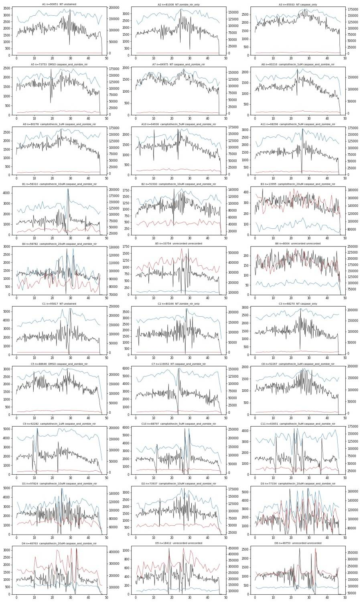
25
tool call · Bash
cd /task; cat > work/plot_scatter.py <<'EOF'
import sys; sys.path.insert(0,'/task/work')
from load import *
import matplotlib; matplotlib.use('Agg'); import matplotlib.pyplot as plt
from matplotlib.colors import LogNorm
d=load_all()
wells=sys.argv[1].split(',')
x,y=sys.argv[2],sys.argv[3]
mode=sys.argv[4] if len(sys.argv)>4 else 'linlin'
out=sys.argv[5]
n=len(wells); nc=min(n,5); nr=(n+nc-1)//nc
fig,axes=plt.subplots(nr,nc,figsize=(4*nc,3.6*nr),squeeze=False)
def tr(v,m):
return np.arcsinh(v/1000.0) if m=='asinh' else v
for ax,w in zip(axes.flat,wells):
f=f'Caspase_primaryneurons_caspase_Group_{w}.fcs'
e=ev(d[f])
xm,ym=mode.split('-') if '-' in mode else ('lin','lin')
xv=tr(e[x].values,xm); yv=tr(e[y].values,ym)
ax.hist2d(xv,yv,bins=200,norm=LogNorm(),cmap='jet')
ax.set_title(f"{w} {layout.set_index('well').loc[w,'stain']}",fontsize=9); ax.set_xlabel(x+f' ({xm})'); ax.set_ylabel(y+f' ({ym})')
plt.tight_layout(); plt.savefig(out,dpi=60)
EOF
python work/plot_scatter.py A1,A7,C7,B3,D5 FSC-A SSC-A lin-lin work/fsc_ssc.png26
tool output
(Bash completed with no output)
27
tool call · Read
{
"file_path": "/task/work/fsc_ssc.png"
}28
tool output
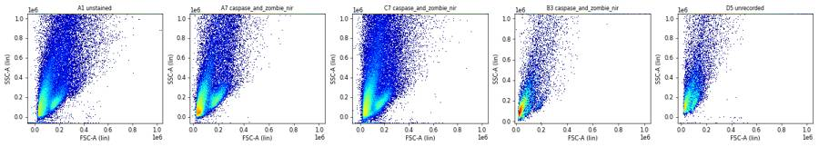
30
tool call · Bash
cd /task; python work/plot_scatter.py A1,A7,C7,B3,D5,A2,C2,B6,D4,D3 FSC-A SSC-A asinh-asinh work/fsc_ssc_log.png
31
tool output
(Bash completed with no output)
32
tool call · Read
{
"file_path": "/task/work/fsc_ssc_log.png"
}33
tool output
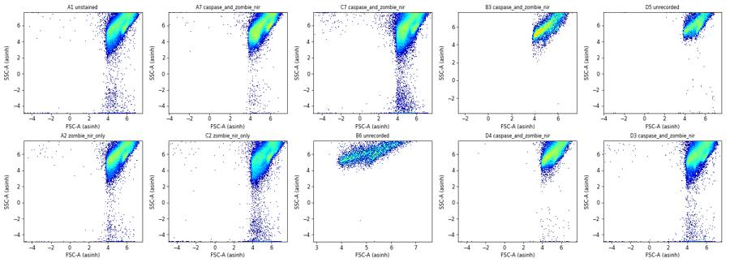
35
agent
I'm looking at scatter distributions (log axes) to decide where the Cells gate should go, given heavy SSC-A saturation (25–40% of events at the 1,048,575 ceiling).
36
tool call · Bash
cd /task; cat > work/plot_log.py <<'EOF'
import sys; sys.path.insert(0,'/task/work')
from load import *
import matplotlib; matplotlib.use('Agg'); import matplotlib.pyplot as plt
from matplotlib.colors import LogNorm
d=load_all()
wells=sys.argv[1].split(','); x,y=sys.argv[2],sys.argv[3]; out=sys.argv[4]
lims=[float(v) for v in sys.argv[5].split(',')] if len(sys.argv)>5 else [3,6.1,3,6.1]
n=len(wells); nc=min(n,5); nr=(n+nc-1)//nc
fig,axes=plt.subplots(nr,nc,figsize=(4*nc,3.6*nr),squeeze=False)
for ax,w in zip(axes.flat,wells):
e=ev(d[f'Caspase_primaryneurons_caspase_Group_{w}.fcs'])
xv=np.log10(np.clip(e[x].values,10,None)); yv=np.log10(np.clip(e[y].values,10,None))
ax.hist2d(xv,yv,bins=200,range=[lims[:2],lims[2:]],norm=LogNorm(),cmap='jet')
ax.set_title(f"{w} {layout.set_index('well').loc[w,'stain']} {layout.set_index('well').loc[w,'treatment']}",fontsize=8); ax.set_xlabel(x); ax.set_ylabel(y); ax.grid(alpha=.3)
plt.tight_layout(); plt.savefig(out,dpi=60)
EOF
python work/plot_log.py A1,A7,C7,B3,D5,A2,C2,B6,D4,D3 FSC-A SSC-A work/fsc_ssc_log10.png 4.3,6.1,3,6.137
tool output
(Bash completed with no output)
38
tool call · Read
{
"file_path": "/task/work/fsc_ssc_log10.png"
}39
tool output
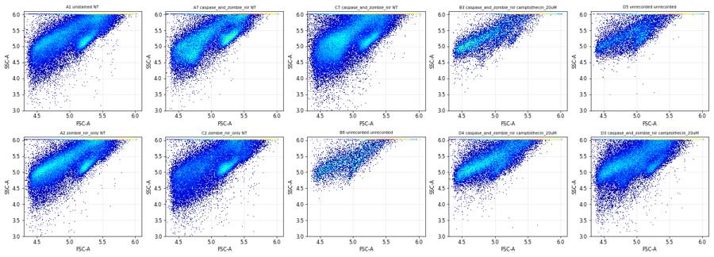
41
tool call · Bash
cd /task; cat > work/plot_lin.py <<'EOF'
import sys; sys.path.insert(0,'/task/work')
from load import *
import matplotlib; matplotlib.use('Agg'); import matplotlib.pyplot as plt
from matplotlib.colors import LogNorm
d=load_all()
wells=sys.argv[1].split(','); x,y=sys.argv[2],sys.argv[3]; out=sys.argv[4]
lims=[float(v) for v in sys.argv[5].split(',')]
poly=None
if len(sys.argv)>6:
poly=np.array([[float(a) for a in p.split(':')] for p in sys.argv[6].split(';')])
n=len(wells); nc=min(n,6); nr=(n+nc-1)//nc
fig,axes=plt.subplots(nr,nc,figsize=(3.6*nc,3.3*nr),squeeze=False)
for ax,w in zip(axes.flat,wells):
e=ev(d[f'Caspase_primaryneurons_caspase_Group_{w}.fcs'])
ax.hist2d(e[x].values,e[y].values,bins=200,range=[lims[:2],lims[2:]],norm=LogNorm(),cmap='jet')
if poly is not None:
pp=np.vstack([poly,poly[:1]]); ax.plot(pp[:,0],pp[:,1],'k-',lw=1.2)
ax.set_title(f"{w} {layout.set_index('well').loc[w,'stain'][:12]} {layout.set_index('well').loc[w,'treatment']}",fontsize=8); ax.grid(alpha=.3)
plt.tight_layout(); plt.savefig(out,dpi=55)
EOF
W=$(python -c "import pandas as pd; print(','.join(pd.read_csv('/task/inputs/plate_layout.csv').well))")
python work/plot_lin.py $W FSC-A SSC-A work/lin_all.png 0,600000,0,106000042
tool output
(Bash completed with no output)
43
tool call · Read
{
"file_path": "/task/work/lin_all.png"
}44
tool output
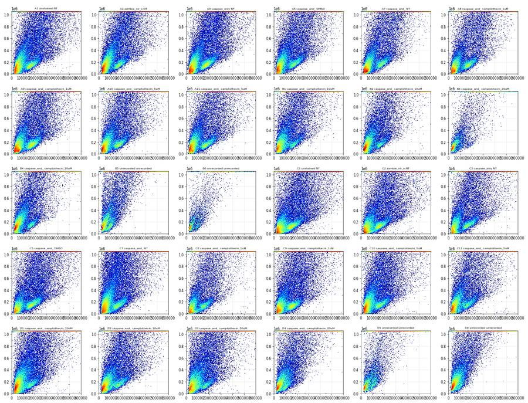
46
tool call · Bash
cd /task; python - <<'EOF'
import sys; sys.path.insert(0,'/task/work')
from load import *
d=load_all()
qs=[1,5,25,50,75,90,95,99,99.9]
for ch in ['BL1-A','RL3-A']:
print(ch, 'quantiles', qs)
for f,s in d.items():
e=ev(s); w=f.split('_')[-1][:-4]
st=layout.set_index('file').loc[f,'stain'][:14]
m=(e['FSC-A']>100000)&(e['FSC-A']<400000)&(e['SSC-A']>50000)&(e['SSC-A']<600000)
v=e.loc[m,ch].values
print(f"{w:4s} {st:14s}", " ".join(f"{np.percentile(v,q):9.0f}" for q in qs))
EOF47
tool output
BL1-A quantiles [1, 5, 25, 50, 75, 90, 95, 99, 99.9] A1 unstained -102 -31 40 106 278 734 1228 2569 5064 A2 zombie_nir_onl -74 -20 53 133 341 825 1265 2465 4606 A3 caspase_only -105 -20 88 271 1614 4294 5874 10775 44935 A5 caspase_and_zo -90 -3 113 421 2864 5132 6674 12075 33500 A7 caspase_and_zo -71 -4 99 357 2703 5445 7338 14303 41304 A8 caspase_and_zo -85 -5 101 402 2524 5605 7625 15619 81216 A9 caspase_and_zo -95 -7 112 448 2610 6471 8894 16559 74925 A10 caspase_and_zo -73 2 126 449 3174 5593 7477 13974 34967 A11 caspase_and_zo -121 -5 114 385 2488 5508 7654 15678 41780 B1 caspase_and_zo -79 6 147 739 3668 5756 7454 13370 29437 B2 caspase_and_zo -76 4 120 469 2618 4717 6249 12329 33250 B3 caspase_and_zo 28 101 707 2438 4169 6329 7808 17410 36689 B4 caspase_and_zo -72 16 160 742 3265 5716 7907 15401 43060 B5 unrecorded 268 579 2055 2857 3671 5171 5967 8764 18832 B6 unrecorded 95 457 2042 3112 3772 4896 6068 10244 30140 C1 unstained -123 -49 15 67 173 432 662 1295 2538 C2 zombie_nir_onl -127 -46 17 68 165 442 676 1380 2612 C3 caspase_only -186 -26 86 244 1210 4159 6304 11768 27902 C5 caspase_and_zo -324 -50 81 282 1662 5427 7640 13544 47029 C7 caspase_and_zo -367 -96 79 585 4886 9226 12188 20240 51346 C8 caspase_and_zo -179 -12 113 501 2524 5224 6954 12150 32629 C9 caspase_and_zo -363 -77 68 422 2980 7433 9777 16562 75620 C10 caspase_and_zo -426 -31 132 490 2541 6065 8384 15567 36692 C11 caspase_and_zo -175 9 191 694 3496 6070 8288 15182 41299 D1 caspase_and_zo -393 -16 251 926 5512 8474 11719 20985 50237 D2 caspase_and_zo -212 -1 217 864 6313 9651 13755 28016 71014 D3 caspase_and_zo -363 -15 257 1424 7727 10990 14360 24348 55029 D4 caspase_and_zo 58 262 1186 3576 4554 6371 7719 11918 25677 D5 unrecorded 363 707 2532 3300 3916 5310 6405 8550 16459 D6 unrecorded 141 324 716 2872 3934 5617 6817 10219 18488 RL3-A quantiles [1, 5, 25, 50, 75, 90, 95, 99, 99.9] A1 unstained -114 -74 -19 21 65 118 170 345 718 A2 zombie_nir_onl -112 -71 -17 24 68 120 167 320 641 A3 caspase_only -162 -68 35 162 478 1629 5573 56303 87441 A5 caspase_and_zo -496 -161 27 242 1815 35707 51814 80230 119810 A7 caspase_and_zo -148 -59 49 189 542 2260 17762 75899 114361 A8 caspase_and_zo -177 -77 28 147 550 3142 23368 64734 92480 A9 caspase_and_zo -236 -102 25 194 722 4295 26672 75139 110488 A10 caspase_and_zo -694 -188 18 294 9036 40429 56906 88581 129530 A11 caspase_and_zo -499 -156 10 194 1219 29684 46502 76444 117707 B1 caspase_and_zo -1407 -267 50 617 24982 46598 60052 88441 130679 B2 caspase_and_zo -488 -159 43 528 20988 39825 53471 83309 120449 B3 caspase_and_zo -82 50 2210 27441 44215 60148 72205 99778 120130 B4 caspase_and_zo -658 -226 53 1782 27655 45993 58714 84264 114849 B5 unrecorded 290 11944 27430 38474 52984 69461 79262 104138 128332 B6 unrecorded 35 1037 18313 26509 35392 46879 55394 71409 91953 C1 unstained -117 -79 -25 13 54 96 127 211 441 C2 zombie_nir_onl -121 -80 -25 12 54 97 128 221 430 C3 caspase_only -216 -67 51 191 536 2054 9412 68407 106331 C5 caspase_and_zo -420 -104 28 132 378 1240 26513 69393 110728 C7 caspase_and_zo -248 -80 40 164 435 1229 5799 70025 121879 C8 caspase_and_zo -348 -87 28 146 478 4274 30826 72699 116401 C9 caspase_and_zo -399 -115 7 111 392 1379 15037 63936 111227 C10 caspase_and_zo -1337 -267 0 239 2764 31377 46522 79879 118621 C11 caspase_and_zo -1231 -241 65 562 … [705 more characters not shown]
49
thinking
The Zombie-only controls show no RL3-A signal, while the caspase-only controls contain Zombie-bright events. I'm plotting BL1-A against RL3-A for all wells next.
50
tool call · Bash
cd /task; cat > work/plot_fl.py <<'EOF'
import sys; sys.path.insert(0,'/task/work')
from load import *
import matplotlib; matplotlib.use('Agg'); import matplotlib.pyplot as plt
from matplotlib.colors import LogNorm
d=load_all()
wells=sys.argv[1].split(','); x,y=sys.argv[2],sys.argv[3]; out=sys.argv[4]
cof=float(sys.argv[5]) if len(sys.argv)>5 else 500
def a(v): return np.arcsinh(v/cof)
n=len(wells); nc=min(n,6); nr=(n+nc-1)//nc
fig,axes=plt.subplots(nr,nc,figsize=(3.6*nc,3.3*nr),squeeze=False)
for ax,w in zip(axes.flat,wells):
e=ev(d[f'Caspase_primaryneurons_caspase_Group_{w}.fcs'])
m=(e['FSC-A']>100000)&(e['FSC-A']<400000)&(e['SSC-A']>50000)&(e['SSC-A']<600000)
e=e[m]
xv=a(e[x].values) if x!='SSC-A' else e[x].values; yv=a(e[y].values) if y!='SSC-A' else e[y].values
ax.hist2d(xv,yv,bins=150,norm=LogNorm(),cmap='jet',range=[[-2,8],[-2,8]] if (x!='SSC-A' and y!='SSC-A') else None)
ax.set_title(f"{w} {layout.set_index('well').loc[w,'stain'][:12]} {layout.set_index('well').loc[w,'treatment']}",fontsize=8); ax.grid(alpha=.3)
ax.set_xlabel(x,fontsize=7); ax.set_ylabel(y,fontsize=7)
plt.tight_layout(); plt.savefig(out,dpi=55)
EOF
W=$(python -c "import pandas as pd; print(','.join(pd.read_csv('/task/inputs/plate_layout.csv').well))")
python work/plot_fl.py $W BL1-A RL3-A work/fl_all.png 50051
tool output
(Bash completed with no output)
52
tool call · Read
{
"file_path": "/task/work/fl_all.png"
}53
tool output
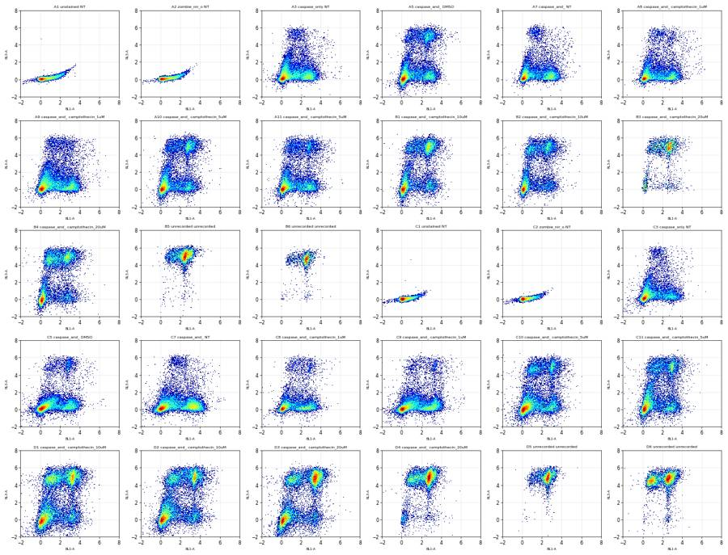
55
tool call · Bash
cd /task; cat > work/plot_pops.py <<'EOF'
import sys; sys.path.insert(0,'/task/work')
from load import *
import matplotlib; matplotlib.use('Agg'); import matplotlib.pyplot as plt
from matplotlib.colors import LogNorm
d=load_all()
wells=sys.argv[1].split(','); out=sys.argv[2]
fig,axes=plt.subplots(len(wells),4,figsize=(15,3.4*len(wells)),squeeze=False)
for row,w in zip(axes,wells):
e=ev(d[f'Caspase_primaryneurons_caspase_Group_{w}.fcs'])
dead=e['RL3-A']>8000; live=e['RL3-A']<1500
cp=live&(e['BL1-A']>2500); cn=live&(e['BL1-A']<800)
for ax,(m,lab) in zip(row,[(np.ones(len(e),bool),'all'),(cn,'live casp-neg'),(cp,'live casp+'),(dead,'Zombie bright')]):
ax.hist2d(e['FSC-A'][m],e['SSC-A'][m],bins=150,range=[[0,600000],[0,1060000]],norm=LogNorm(),cmap='jet')
ax.set_title(f"{w} {lab} n={m.sum()}",fontsize=9); ax.grid(alpha=.3)
plt.tight_layout(); plt.savefig(out,dpi=55)
EOF
python work/plot_pops.py A1,A7,B1,C7,D1 work/pops_scatter.png56
tool output
(Bash completed with no output)
57
tool call · Read
{
"file_path": "/task/work/pops_scatter.png"
}58
tool output
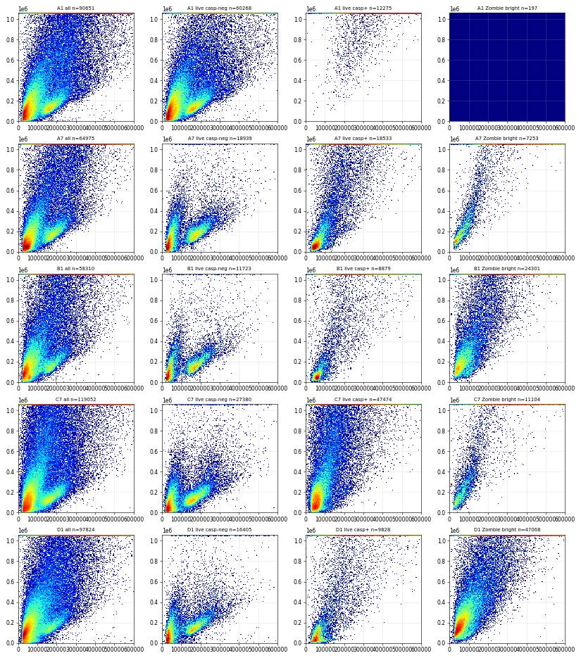
60
tool call · Bash
cd /task; cat > work/plot_pops_log.py <<'EOF'
import sys; sys.path.insert(0,'/task/work')
from load import *
import matplotlib; matplotlib.use('Agg'); import matplotlib.pyplot as plt
from matplotlib.colors import LogNorm
d=load_all()
wells=sys.argv[1].split(','); out=sys.argv[2]
fig,axes=plt.subplots(len(wells),4,figsize=(15,3.4*len(wells)),squeeze=False)
for row,w in zip(axes,wells):
e=ev(d[f'Caspase_primaryneurons_caspase_Group_{w}.fcs'])
dead=e['RL3-A']>8000; live=e['RL3-A']<1500
cp=live&(e['BL1-A']>2500); cn=live&(e['BL1-A']<800)
lf=np.log10(np.clip(e['FSC-A'],1e3,None)); ls=np.log10(np.clip(e['SSC-A'],1e3,None))
for ax,(m,lab) in zip(row,[(np.ones(len(e),bool),'all'),(cn,'live casp-neg'),(cp,'live casp+'),(dead,'Zombie bright')]):
ax.hist2d(lf[m],ls[m],bins=150,range=[[4.3,6.05],[3.5,6.05]],norm=LogNorm(),cmap='jet')
ax.set_title(f"{w} {lab} n={m.sum()}",fontsize=9); ax.grid(alpha=.3)
plt.tight_layout(); plt.savefig(out,dpi=55)
EOF
python work/plot_pops_log.py A1,A7,B1,C7,D1 work/pops_scatter_log.png61
tool output
(Bash completed with no output)
62
tool call · Read
{
"file_path": "/task/work/pops_scatter_log.png"
}63
tool output
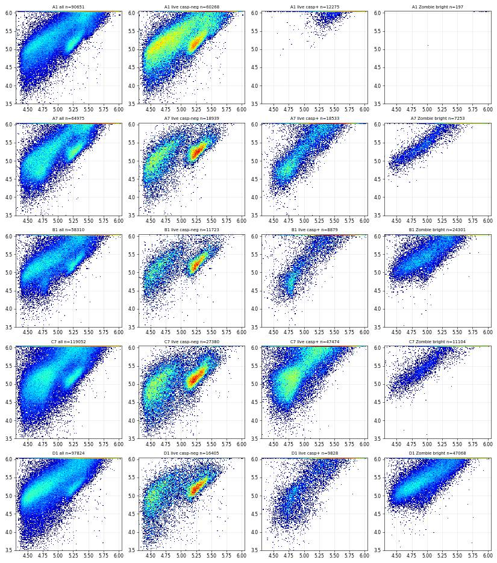
65
thinking
Apoptotic neurons sit at low FSC, autofluorescence stays above SSC-A 550k, and about 30% of events pile up at the SSC-A ceiling. I'm checking the FlowKit API next before drafting the Cells gate.
66
tool call · Bash
cd /task; python - <<'EOF'
import flowkit as fk, inspect
print(inspect.signature(fk.transforms.LogicleTransform.__init__))
print(inspect.signature(fk.transforms.LogTransform.__init__) if hasattr(fk.transforms,'LogTransform') else '')
print([n for n in dir(fk.transforms) if not n.startswith('_')])
print(inspect.signature(fk.gates.EllipsoidGate.__init__))
print(inspect.signature(fk.gates.PolygonGate.__init__))
print(inspect.signature(fk.gates.RectangleGate.__init__))
print(inspect.signature(fk.Dimension.__init__))
print(inspect.signature(fk.GatingStrategy.add_gate))
print(inspect.signature(fk.GatingStrategy.add_transform))
print(inspect.signature(fk.GatingStrategy.gate_sample))
print(inspect.signature(fk.export_gatingml))
EOF67
tool output
(self, param_t, param_w, param_m, param_a) (self, param_t, param_m) ['AsinhTransform', 'HyperlogTransform', 'LinearTransform', 'LogTransform', 'LogicleTransform', 'RatioTransform', 'WSPBiexTransform', 'WSPLogTransform'] (self, gate_name, dimensions, coordinates, covariance_matrix, distance_square) (self, gate_name, dimensions, vertices, use_complement=False) (self, gate_name, dimensions, use_complement=False) (self, dimension_id, compensation_ref='uncompensated', transformation_ref=None, range_min=None, range_max=None) (self, gate, gate_path, sample_id=None) (self, transform_id, transform) (self, sample, cache_events=False, verbose=False) (gating_strategy, file_handle, sample_id=None)
69
tool call · Bash
cd /task; python - <<'EOF' import flowkit as fk, numpy as np t=fk.transforms.LogicleTransform(param_t=1048576, param_w=0.5, param_m=6.02, param_a=0) x=np.array([[-1000,0],[0,0],[1000,0],[25000,0],[50000,0],[1e5,0],[3e5,0],[1e6,0],[1048575,0]],float) print(t.apply(x[:,0])) t2=fk.transforms.LogicleTransform(param_t=1048576, param_w=1.0, param_m=6.02, param_a=0) print(t2.apply(np.array([-2000,-500,0,500,1000,2000,5000,1e4,1e5,1e6]))) EOF
70
tool output
[-0.33125231 0.08305648 0.49736527 0.73041835 0.78044208 0.83045651 0.90971887 0.99657804 0.99999993] [-0.21177813 -0.10126973 0.16611296 0.43349565 0.49026702 0.54400405 0.61253824 0.66341386 0.83037109 0.99657758]
72
tool call · Bash
cd /task; cat > work/common.py <<'EOF'
import sys; sys.path.insert(0,'/task/work')
from load import *
SC=fk.transforms.LogicleTransform(param_t=1048576, param_w=0.5, param_m=6.02, param_a=0)
FL=fk.transforms.LogicleTransform(param_t=1048576, param_w=1.0, param_m=6.02, param_a=0)
def ell_poly(cx,cy,a,b,theta_deg,n=24):
"""ellipse in log10 raw coords -> polygon vertices in raw units"""
th=np.deg2rad(theta_deg); t=np.linspace(0,2*np.pi,n,endpoint=False)
x=cx+a*np.cos(t)*np.cos(th)-b*np.sin(t)*np.sin(th)
y=cy+a*np.cos(t)*np.sin(th)+b*np.sin(t)*np.cos(th)
return 10**x,10**y
EOF
cat > work/plot_cells.py <<'EOF'
import sys; sys.path.insert(0,'/task/work')
from common import *
import matplotlib; matplotlib.use('Agg'); import matplotlib.pyplot as plt
from matplotlib.colors import LogNorm
from matplotlib.path import Path
d=load_all()
cx,cy,a,b,th=[float(v) for v in sys.argv[1].split(',')]
wells=sys.argv[2].split(','); out=sys.argv[3]
px,py=ell_poly(cx,cy,a,b,th)
pX=SC.apply(px); pY=SC.apply(py)
path=Path(np.c_[pX,pY])
nc=6; nr=(len(wells)+nc-1)//nc
fig,axes=plt.subplots(nr,nc,figsize=(3.6*nc,3.3*nr),squeeze=False)
for ax,w in zip(axes.flat,wells):
e=ev(d[f'Caspase_primaryneurons_caspase_Group_{w}.fcs'])
X=SC.apply(e['FSC-A'].values); Y=SC.apply(e['SSC-A'].values)
inside=path.contains_points(np.c_[X,Y])
ax.hist2d(X,Y,bins=200,range=[[0.72,1.0],[0.6,1.005]],norm=LogNorm(),cmap='jet')
pp=np.r_[np.c_[pX,pY],np.c_[pX,pY][:1]]; ax.plot(pp[:,0],pp[:,1],'k-',lw=1.2)
ax.set_title(f"{w} {layout.set_index('well').loc[w,'treatment']} in={100*inside.mean():.1f}%",fontsize=8)
plt.tight_layout(); plt.savefig(out,dpi=55)
EOF
python work/plot_cells.py 5.0,5.15,0.62,0.30,50 A1,A2,A3,A7,C7,B1,B3,B6,D3,D4,D5,D6 work/cells1.png73
tool output
(Bash completed with no output)
74
tool call · Read
{
"file_path": "/task/work/cells1.png"
}75
tool output
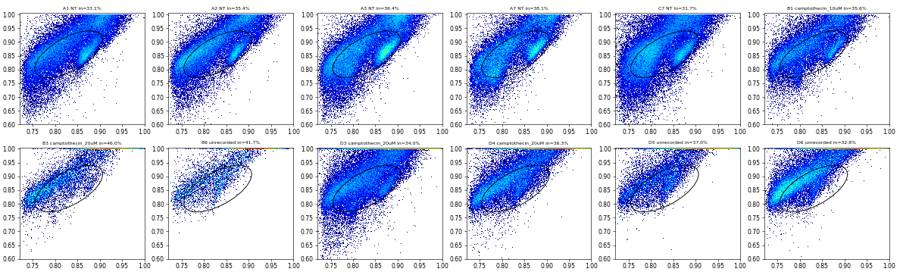
77
tool call · Bash
cd /task; python work/plot_cells.py 5.12,5.18,0.72,0.40,48 A1,A2,A3,A7,C7,B1,B3,B6,D3,D4,D5,D6 work/cells2.png
78
tool output
(Bash completed with no output)
79
tool call · Read
{
"file_path": "/task/work/cells2.png"
}80
tool output
82
agent
I'm iterating on the Cells ellipse placement on logicle FSC/SSC axes so it follows the diagonal cell band while excluding near-threshold debris and the SSC ceiling.
83
tool call · Bash
cd /task; sed -i 's/dpi=55/dpi=75/' work/plot_cells.py; python work/plot_cells.py 5.1,5.27,0.72,0.30,45 A1,A3,A7,C7,B1,D4 work/cells3.png
84
tool output
(Bash completed with no output)
85
tool call · Read
{
"file_path": "/task/work/cells3.png"
}86
tool output
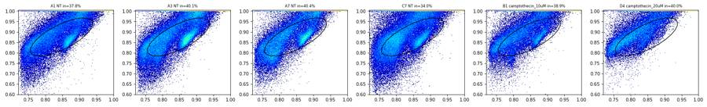
88
tool call · Bash
cd /task; cat > work/plot_cells2.py <<'EOF'
import sys; sys.path.insert(0,'/task/work')
from common import *
import matplotlib; matplotlib.use('Agg'); import matplotlib.pyplot as plt
from matplotlib.colors import LogNorm
from matplotlib.path import Path
d=load_all()
cx,cy,a,b,th=[float(v) for v in sys.argv[1].split(',')]
wells=sys.argv[2].split(','); out=sys.argv[3]
px,py=ell_poly(cx,cy,a,b,th,n=48)
pX=SC.apply(px); pY=SC.apply(py); path=Path(np.c_[pX,pY])
nc=3; nr=(len(wells)+nc-1)//nc
fig,axes=plt.subplots(nr,nc,figsize=(6*nc,6*nr),squeeze=False)
for ax,w in zip(axes.flat,wells):
e=ev(d[f'Caspase_primaryneurons_caspase_Group_{w}.fcs'])
X=SC.apply(e['FSC-A'].values); Y=SC.apply(e['SSC-A'].values)
inside=path.contains_points(np.c_[X,Y])
ax.hist2d(X,Y,bins=220,range=[[0.72,1.005],[0.72,1.005]],norm=LogNorm(),cmap='jet')
pp=np.r_[np.c_[pX,pY],np.c_[pX,pY][:1]]; ax.plot(pp[:,0],pp[:,1],'k-',lw=1.5)
ax.set_aspect('equal'); ax.grid(alpha=.4)
ax.set_title(f"{w} {layout.set_index('well').loc[w,'treatment']} in={100*inside.mean():.1f}%",fontsize=11)
plt.tight_layout(); plt.savefig(out,dpi=50)
EOF
python work/plot_cells2.py 5.1,5.27,0.72,0.30,45 A1,A7,C7,B1,D4,B6 work/cells4.png89
tool output
(Bash completed with no output)
90
tool call · Read
{
"file_path": "/task/work/cells4.png"
}91
tool output
93
tool call · Bash
cd /task; python work/plot_cells2.py 5.05,5.3,0.78,0.40,52 A1,A7,C7,B1,D4,B6 work/cells5.png
94
tool output
(Bash completed with no output)
95
tool call · Read
{
"file_path": "/task/work/cells5.png"
}96
tool output
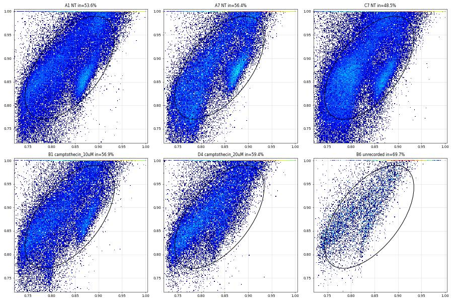
98
agent
Cells ellipse looks right (keeps intact + apoptotic cells, drops near-threshold debris and the SSC ceiling). Now checking SSC-A vs SSC-H for the singlet gate.
99
tool call · Bash
cd /task; cat > work/plot_sing.py <<'EOF'
import sys; sys.path.insert(0,'/task/work')
from common import *
import matplotlib; matplotlib.use('Agg'); import matplotlib.pyplot as plt
from matplotlib.colors import LogNorm
from matplotlib.path import Path
d=load_all()
CELL=(5.04,5.28,0.74,0.40,52)
px,py=ell_poly(*CELL,n=48); cpath=Path(np.c_[SC.apply(px),SC.apply(py)])
wells=sys.argv[1].split(','); out=sys.argv[2]
poly=None
if len(sys.argv)>3: poly=np.array([[float(a) for a in p.split(':')] for p in sys.argv[3].split(';')])
nc=4; nr=(len(wells)+nc-1)//nc
fig,axes=plt.subplots(nr,nc,figsize=(5*nc,5*nr),squeeze=False)
for ax,w in zip(axes.flat,wells):
e=ev(d[f'Caspase_primaryneurons_caspase_Group_{w}.fcs'])
inc=cpath.contains_points(np.c_[SC.apply(e['FSC-A'].values),SC.apply(e['SSC-A'].values)])
e=e[inc]
ax.hist2d(e['SSC-A'],e['SSC-H'],bins=200,range=[[0,800000],[0,800000]],norm=LogNorm(),cmap='jet')
if poly is not None:
pp=np.vstack([poly,poly[:1]]); ax.plot(pp[:,0],pp[:,1],'k-',lw=1.5)
ins=Path(poly).contains_points(e[['SSC-A','SSC-H']].values); t=f" sing={100*ins.mean():.1f}%"
else: t=''
ax.set_title(f"{w} cells n={len(e)}{t}",fontsize=10); ax.grid(alpha=.4)
plt.tight_layout(); plt.savefig(out,dpi=50)
EOF
python work/plot_sing.py A1,A7,C7,B1,D3,D4,B6,C10 work/sing1.png100
tool output
(Bash completed with no output)
101
tool call · Read
{
"file_path": "/task/work/sing1.png"
}102
tool output
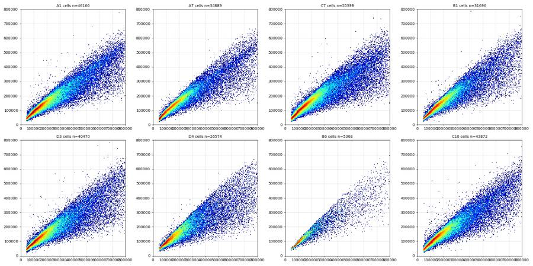
104
tool call · Bash
cd /task; python - <<'EOF'
import sys; sys.path.insert(0,'/task/work')
from common import *
from matplotlib.path import Path
d=load_all()
CELL=(5.04,5.28,0.74,0.40,52)
px,py=ell_poly(*CELL,n=48); cpath=Path(np.c_[SC.apply(px),SC.apply(py)])
allr=[]
for w in ['A1','A7','C7','B1','D3','D4','C10','A3']:
e=ev(d[f'Caspase_primaryneurons_caspase_Group_{w}.fcs'])
inc=cpath.contains_points(np.c_[SC.apply(e['FSC-A'].values),SC.apply(e['SSC-A'].values)])
e=e[inc]; r=e['SSC-H']/e['SSC-A']
print(w, 'SSC-A range',e['SSC-A'].min(),e['SSC-A'].max(),'ratio pct',np.round(np.percentile(r,[1,5,10,25,50,75,90,95,99]),3))
for lo,hi in [(0,1e5),(1e5,2e5),(2e5,3e5),(3e5,5e5),(5e5,8e5)]:
m=(e['SSC-A']>=lo)&(e['SSC-A']<hi)
h,b=np.histogram(r[m],bins=np.arange(0.3,1.21,0.05))
print(' ',int(lo/1e3),int(hi/1e3),m.sum()," ".join(f"{x:5d}" for x in h))
EOF105
tool output
A1 SSC-A range 44565.0 817000.0 ratio pct [0.378 0.487 0.552 0.665 0.782 0.875 0.94 0.981 1.119]
0 100 7377 1 1 3 15 32 56 96 210 378 620 921 1428 1557 1026 465 200 103 86
100 200 16633 2 6 32 77 183 363 581 942 1403 1963 3245 3936 2303 1043 286 127 51 25
200 300 8235 7 38 94 237 408 639 774 913 1111 1398 1274 743 404 136 26 11 3 3
300 500 7995 67 138 303 511 711 900 1034 1108 1131 970 540 331 168 49 4 2 4 2
500 800 5864 128 213 315 416 494 613 789 1056 1027 445 198 88 18 3 2 1 0 0
A7 SSC-A range 44392.0 815254.0 ratio pct [0.374 0.499 0.575 0.695 0.804 0.879 0.941 0.975 1.058]
0 100 7621 1 1 9 16 39 84 167 300 489 829 1225 1582 1404 860 346 116 59 22
100 200 11424 3 12 28 79 126 231 332 539 799 1300 2419 2800 1570 859 225 46 24 10
200 300 6723 13 27 66 128 207 292 411 553 820 1331 1427 758 461 199 16 7 2 3
300 500 5334 45 93 186 305 417 487 576 665 831 715 412 337 194 39 3 4 0 1
500 800 3736 104 150 188 220 288 366 444 741 610 283 162 101 22 2 0 0 0 0
C7 SSC-A range 44566.0 817761.0 ratio pct [0.361 0.479 0.557 0.696 0.825 0.906 0.973 1.024 1.23 ]
0 100 11258 0 5 10 17 65 107 181 338 567 806 1440 2007 2121 1477 797 375 258 214
100 200 20229 7 14 52 114 221 370 541 697 1102 1882 3456 4772 3662 1910 730 312 136 94
200 300 9517 17 52 125 254 359 450 558 685 969 1400 1801 1266 981 421 106 26 12 8
300 500 8268 89 202 351 508 639 715 862 989 1115 1009 713 587 333 99 10 7 2 2
500 800 6048 192 287 430 517 560 636 821 957 690 407 214 164 52 8 1 1 0 1
B1 SSC-A range 44435.0 815809.0 ratio pct [0.377 0.492 0.565 0.691 0.811 0.892 0.952 0.987 1.093]
0 100 5091 0 1 1 10 13 27 49 91 173 320 617 986 1264 825 392 114 69 45
100 200 11089 2 7 20 48 99 221 343 542 748 1204 1970 2596 1857 1009 282 59 26 17
200 300 6294 6 28 77 162 242 299 446 558 710 1033 1217 762 509 200 32 3 4 1
300 500 5588 45 90 196 308 390 484 601 662 752 730 590 420 236 51 8 5 1 1
500 800 3569 90 127 221 210 329 335 417 437 507 431 273 104 38 4 1 0 0 0
D3 SSC-A range 44460.0 817906.0 ratio pct [0.349 0.46 0.533 0.66 0.793 0.889 0.956 0.998 1.174]
0 100 6774 0 1 6 6 24 43 76 138 263 424 672 1147 1582 1198 491 241 144 87
100 200 14503 2 15 33 97 219 376 618 859 1186 1618 2454 3068 2273 1015 355 137 62 34
200 300 7327 22 51 114 268 368 533 670 725 868 1045 1185 768 428 195 39 15 6 9
300 500 7045 104 219 367 438 616 695 790 867 838 781 613 387 214 58 13 6 2 0
500 800 4757 167 226 351 376 425 472 532 605 632 472 251 113 32 6 4 3 1 1
D4 SSC-A range 45044.0 817222.0 ratio pct [0.328 0.442 0.513 0.648 0.791 0.896 0.958 0.987 1.061]
0 100 3681 0 1 3 5 7 25 46 67 128 194 385 630 875 763 354 80 45 23
100 200 9399 3 14 33 78 158 284 415 609 807 1122 1449 1593 1422 1049 262 51 19 8
200 300 5242 19 57 112 169 258 337 433 507 609 688 650 562 535 263 21 3 0 0
300 500 5031 75 159 251 350 408 435 484 496 528 492 445 399 375 75 4 2 0 0
500 800 3183 140 177 251 329 311 367 338 285 292 221 190 143 45 5 0 0 1 0
C10 SSC-A range 44552.0 818019.0 ratio pct [0.382 0.5 0.569 0.689 0.806 0.889 0.953 0.996 1.166]
0 100 7033 0 2 12 12 36 55 116 200 333 525 893 1262 1459 988 481 218 128 84
100 200 16733 1 12 36 81 180 279 454 751 1180 1902 3206 3916 2696 1260 401 166 80 44
200 300 8135 8 42 81 166 292 473 579 831 1020 1399 1456 920 547 228 38 12 9 8
300 500 7269 47 143 245 409 592 727 838 941 980 892 643 410 272 70 11 9 8 3
500 800 4657 90 162 234 331 424 436 618 747 718 458 232 113 37 4 5 2 1 0
A3 SSC-A range 44442.0 816477.0 ratio pct [0.376 0.5 0.575 0.697 0.81 0.888 0.95 0.988 1.098]
0 100 9814 0 0 0 19 41 92 132 255 477 777 1263 1958 2103 1442 652 233 126 87
100 200 18291 0 12 41 106 172 280 449 798 1176 2123 3801 4629 2733 1327 402 129 49 18
200 300 9046 9 35 91 216 309 503 577 785 1116 1659 1830 983 608 262 35 12 3 2
300 500 7880 64 151 302 449 553 776 925 1018 1104 1035 672 433 298 58 6 6 0 1
500 800 5658 114 179 253 365 418 517 688 1088 1068 498 224 120 30 4 1 1 0 0107
tool call · Bash
cd /task; python work/plot_sing.py A1,A7,C7,B1,D3,D4,B6,C10 work/sing2.png "40000:24000;850000:380000;850000:850000;40000:52000"
108
tool output
(Bash completed with no output)
109
tool call · Read
{
"file_path": "/task/work/sing2.png"
}110
tool output
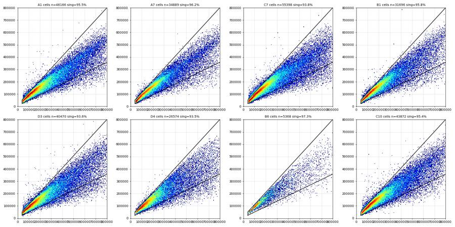
112
agent
Singlet polygon set (diagonal SSC-H/SSC-A band; doublets below). Now looking at RL3-A (Zombie) vs SSC-A within singlets to place the Live boundary.
113
tool call · Bash
cd /task; cat > work/gatelib.py <<'EOF'
import sys; sys.path.insert(0,'/task/work')
from common import *
from matplotlib.path import Path
CELL=(5.04,5.28,0.74,0.40,52)
SING=np.array([[40000,26000],[850000,425000],[850000,850000],[40000,52000]],float)
_px,_py=ell_poly(*CELL,n=48)
CELL_POLY_RAW=np.c_[_px,_py]
cpath=Path(np.c_[SC.apply(_px),SC.apply(_py)])
spath=Path(SING)
def singlets(e):
inc=cpath.contains_points(np.c_[SC.apply(e['FSC-A'].values),SC.apply(e['SSC-A'].values)])
e=e[inc]
ins=spath.contains_points(e[['SSC-A','SSC-H']].values)
return e[ins]
EOF
cat > work/plot_fl_ssc.py <<'EOF'
import sys; sys.path.insert(0,'/task/work')
from gatelib import *
import matplotlib; matplotlib.use('Agg'); import matplotlib.pyplot as plt
from matplotlib.colors import LogNorm
d=load_all()
ch=sys.argv[1]; wells=sys.argv[2].split(','); out=sys.argv[3]
thr=[float(v) for v in sys.argv[4].split(',')] if len(sys.argv)>4 else []
pre=sys.argv[5] if len(sys.argv)>5 else None # optional live prefilter "RL3-A<1500"
nc=5; nr=(len(wells)+nc-1)//nc
fig,axes=plt.subplots(nr,nc,figsize=(4.5*nc,4*nr),squeeze=False)
for ax,w in zip(axes.flat,wells):
e=singlets(ev(d[f'Caspase_primaryneurons_caspase_Group_{w}.fcs']))
if pre: c,v=pre.split('<'); e=e[e[c]<float(v)]
X=FL.apply(e[ch].values)
ax.hist2d(X,e['SSC-A'],bins=180,range=[[0.0,1.0],[0,850000]],norm=LogNorm(),cmap='jet')
s=''
for t in thr:
ax.axvline(FL.apply(np.array([t]))[0],color='k',lw=1); s+=f" >{t:.0f}:{100*(e[ch]>t).mean():.1f}%"
ax.set_title(f"{w} {layout.set_index('well').loc[w,'stain'][:10]} {layout.set_index('well').loc[w,'treatment'][:14]} n={len(e)}\n{s}",fontsize=9)
tk=[-1000,0,1000,1e4,1e5,1e6]; ax.set_xticks(FL.apply(np.array(tk,float))); ax.set_xticklabels(['-1e3','0','1e3','1e4','1e5','1e6'])
plt.tight_layout(); plt.savefig(out,dpi=50)
EOF
python work/plot_fl_ssc.py RL3-A A1,C1,A2,C2,A3,C3,A5,C5,A7,C7,A8,B1,B3,B4,D3,D4,B5,B6,D5,D6 work/rl3_ssc.png 1000,2000,5000114
tool output
(Bash completed with no output)
115
tool call · Read
{
"file_path": "/task/work/rl3_ssc.png"
}116
tool output
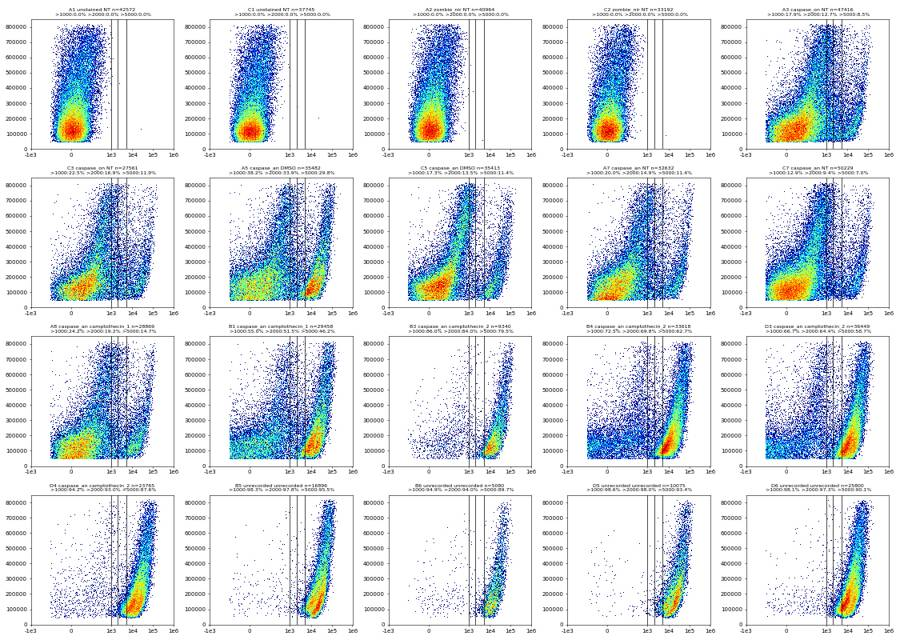
118
tool call · Bash
cd /task; python - <<'EOF'
import sys; sys.path.insert(0,'/task/work')
from gatelib import *
d=load_all()
bins=np.r_[-1e6,np.round(10**np.arange(2.5,5.31,0.1))]
print('bins upper', " ".join(f"{b:6.0f}" for b in bins[1:]))
for w in ['A1','C1','A2','A3','C3','A7','C7','A5','C5','A8','A10','B1','B2','B4','C10','D1','D2','D3']:
e=singlets(ev(d[f'Caspase_primaryneurons_caspase_Group_{w}.fcs']))
for lo,hi in [(0,300000),(300000,900000)]:
m=(e['SSC-A']>=lo)&(e['SSC-A']<hi)
h,_=np.histogram(e.loc[m,'RL3-A'],bins=bins)
print(f"{w:4s}{lo//1000:4d}", " ".join(f"{x:6d}" for x in h))
EOF119
tool output
bins upper 316 398 501 631 794 1000 1259 1585 1995 2512 3162 3981 5012 6310 7943 10000 12589 15849 19953 25119 31623 39811 50119 63096 79433 100000 125893 158489 199526 A1 0 30945 37 8 2 3 2 0 0 0 0 0 0 0 0 0 0 0 0 0 0 1 0 0 0 0 0 0 0 0 A1 300 11119 215 124 53 34 19 9 0 0 1 0 0 0 0 0 0 0 0 0 0 0 0 0 0 0 0 0 0 0 C1 0 28206 2 3 1 0 0 0 0 0 1 0 0 0 0 0 0 0 0 0 1 0 0 0 0 0 0 0 0 0 C1 300 9399 62 36 22 6 5 1 0 0 0 0 0 0 0 0 0 0 0 0 0 0 0 0 0 0 0 0 0 0 A2 0 30290 26 9 4 2 0 1 0 0 0 0 0 1 0 0 0 0 0 0 0 0 0 0 0 0 0 0 0 0 A2 300 10300 167 83 45 18 13 4 1 0 0 0 0 0 0 0 0 0 0 0 0 0 0 0 0 0 0 0 0 0 A3 0 27682 992 822 624 544 475 415 348 340 310 309 242 230 239 227 242 257 291 276 316 297 234 134 70 13 2 0 0 0 A3 300 4016 833 796 734 708 710 562 449 334 291 233 199 174 128 99 99 70 84 76 107 115 111 136 161 168 64 21 7 0 C3 0 14671 618 505 418 338 296 273 243 204 230 177 207 217 168 185 171 177 182 234 216 249 221 149 84 41 5 0 0 0 C3 300 2001 592 558 528 406 416 319 278 219 176 151 131 109 85 101 78 86 70 51 74 65 97 110 108 129 93 34 14 3 A7 0 19043 650 539 457 333 293 251 208 204 177 162 158 148 173 170 182 173 199 245 292 300 241 209 107 48 6 0 0 0 A7 300 2334 573 536 476 451 412 391 332 269 158 133 117 105 114 80 61 63 41 61 64 90 86 140 170 178 137 63 25 4 C7 0 32835 762 535 471 354 283 249 220 188 173 166 154 168 167 156 146 170 177 219 246 268 245 196 113 49 11 6 0 0 C7 300 4313 1012 941 917 721 619 507 353 244 173 146 107 87 96 61 68 71 60 65 67 67 106 139 149 172 137 73 28 3 A5 0 14980 578 449 354 340 305 266 257 238 227 242 265 326 461 716 851 942 912 967 855 697 522 359 110 32 9 1 0 0 A5 300 2494 503 518 531 471 417 316 254 175 129 108 88 78 84 72 70 75 96 161 238 350 369 440 471 370 207 91 39 5 C5 0 21295 440 313 238 182 132 110 122 91 118 114 124 140 167 223 288 356 326 345 301 237 194 138 71 26 4 0 0 0 C5 300 2646 802 849 858 848 681 502 329 170 99 71 67 50 32 30 44 48 54 54 89 133 150 166 171 164 124 67 17 3 A8 0 16064 520 401 391 330 275 224 236 200 168 191 166 213 235 295 316 321 322 379 327 290 194 143 59 12 1 0 0 0 A8 300 1919 429 421 384 394 360 310 247 202 197 160 117 104 96 73 60 62 60 77 106 81 121 162 192 134 84 33 9 2 A10 0 13139 535 431 377 331 311 290 217 220 252 236 306 335 524 717 1031 1095 1171 1164 991 876 583 359 160 49 8 2 1 0 A10 300 1944 392 344 350 314 282 249 205 167 149 132 111 89 75 75 83 80 115 179 300 395 449 484 568 412 258 152 50 11 B1 0 9243 392 282 263 247 200 210 176 211 228 244 310 464 668 844 1059 1177 1179 1192 1162 845 537 363 149 47 9 0 1 0 B1 300 1416 249 276 258 232 191 154 156 115 106 91 65 76 67 68 69 121 187 271 407 498 547 636 601 434 257 147 49 10 B2 0 7419 285 264 216 185 184 158 174 194 232 321 397 752 1099 1402 1495 1541 1412 1121 738 509 309 173 65 22 6 0 0 0 B2 300 1390 253 250 218 209 211 165 125 103 102 84 68 54 69 75 105 157 247 403 490 599 546 492 387 281 189 88 32 4 B4 0 6343 239 246 213 205 156 201 176 209 270 340 550 968 1470 1928 2103 2224 2026 1643 1316 972 623 334 111 29 5 1 0 0 B4 300 1035 157 180 174 166 128 136 1 … [1,845 more characters not shown]
121
thinking
Zombie-bright cells separate cleanly from the stained wells, so I'm setting the Live upper limit at 2,000. Next I'll gate BL1-A (caspase) against SSC-A within Live.
122
tool call · Bash
cd /task; python work/plot_fl_ssc.py BL1-A A1,C1,A2,C2,A3,C3,A5,C5,A7,C7,A8,B1,B3,B4,D3,D4,B5,B6,D5,D6 work/bl1_ssc.png 1000,2000,3000 "RL3-A<2000"
123
tool output
(Bash completed with no output)
124
tool call · Read
{
"file_path": "/task/work/bl1_ssc.png"
}125
tool output
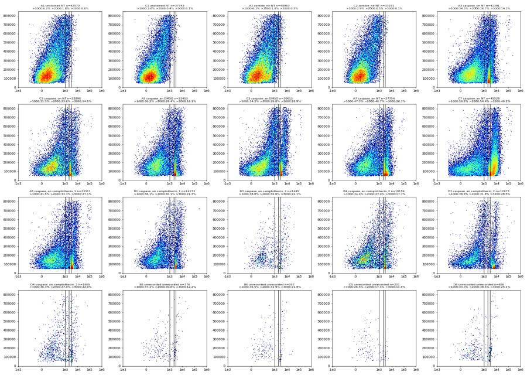
127
tool call · Bash
cd /task; python - <<'EOF'
import sys; sys.path.insert(0,'/task/work')
from gatelib import *
d=load_all()
bins=np.r_[-1e6,np.round(10**np.arange(2.5,5.01,0.1)),1e7]
print('upper ', " ".join(f"{b:6.0f}" for b in bins[1:]))
for w in ['A1','C1','A2','C2','A3','C3','A7','C7','A5','C5','A8','B1','D1','D3']:
e=singlets(ev(d[f'Caspase_primaryneurons_caspase_Group_{w}.fcs'])); e=e[e['RL3-A']<2000]
for lo,hi in [(0,250000),(250000,500000),(500000,900000)]:
m=(e['SSC-A']>=lo)&(e['SSC-A']<hi)
h,_=np.histogram(e.loc[m,'BL1-A'],bins=bins)
print(f"{w:4s}{lo//1000:4d} {m.sum():6d}", " ".join(f"{x:6d}" for x in h))
EOF128
tool output
upper 316 398 501 631 794 1000 1259 1585 1995 2512 3162 3981 5012 6310 7943 10000 12589 15849 19953 25119 31623 39811 50119 63096 79433 100000 10000000 A1 0 27745 25199 735 558 469 323 197 103 80 42 17 13 6 2 1 0 0 0 0 0 0 0 0 0 0 0 0 0 A1 250 10081 6836 639 528 457 418 352 287 228 142 84 63 15 19 4 5 4 0 0 0 0 0 0 0 0 0 0 0 A1 500 4744 1291 329 414 373 428 399 369 307 304 214 164 77 36 18 12 8 0 1 0 0 0 0 0 0 0 0 0 C1 0 26050 25213 291 200 147 95 59 29 10 4 1 0 1 0 0 0 0 0 0 0 0 0 0 0 0 0 0 0 C1 250 7502 5577 503 433 339 240 167 108 70 41 14 7 2 1 0 0 0 0 0 0 0 0 0 0 0 0 0 0 C1 500 4191 1317 445 476 459 426 387 271 178 105 60 40 17 7 2 1 0 0 0 0 0 0 0 0 0 0 0 0 A2 0 27178 23223 1074 931 734 531 308 183 110 50 25 5 1 3 0 0 0 0 0 0 0 0 0 0 0 0 0 0 A2 250 9665 6162 701 598 502 444 397 344 221 135 72 50 18 16 3 1 1 0 0 0 0 0 0 0 0 0 0 0 A2 500 4120 1092 331 301 331 367 355 319 334 231 203 132 70 28 17 6 3 0 0 0 0 0 0 0 0 0 0 0 C2 0 22424 21660 267 187 131 83 48 18 19 4 5 1 1 0 0 0 0 0 0 0 0 0 0 0 0 0 0 0 C2 250 7070 5322 459 388 313 211 170 111 58 21 11 2 3 1 0 0 0 0 0 0 0 0 0 0 0 0 0 0 C2 500 3697 1094 309 392 468 400 332 261 196 110 71 27 19 14 4 0 0 0 0 0 0 0 0 0 0 0 0 0 A3 0 29447 17127 1070 951 794 742 664 457 372 492 2205 2280 920 579 389 185 108 59 22 13 7 2 1 2 2 2 1 1 A3 250 8311 2633 589 500 393 395 397 320 372 279 281 434 544 480 366 184 80 35 10 7 2 2 1 1 1 1 2 2 A3 500 3633 189 96 114 135 176 227 277 336 223 243 236 246 291 324 245 140 63 29 8 3 0 2 0 3 3 5 19 C3 0 15977 9813 565 499 408 383 312 267 231 255 874 884 433 308 271 226 134 63 28 15 5 2 0 1 0 0 0 0 C3 250 4755 1505 360 341 276 251 213 208 179 146 158 187 227 209 183 132 87 53 30 7 0 2 0 0 0 1 0 0 C3 500 2158 141 73 100 132 156 187 193 164 116 98 103 113 132 142 118 75 59 34 9 3 1 1 0 1 1 1 5 A7 0 19931 8835 556 480 461 418 361 288 232 350 1903 1684 1781 1366 601 280 193 84 33 11 7 3 1 1 2 0 0 0 A7 250 5635 1792 269 269 254 250 220 187 176 177 203 300 357 432 379 168 123 54 17 4 3 0 0 0 1 0 0 0 A7 500 2188 102 37 52 72 74 120 145 133 133 151 130 165 234 249 181 100 51 25 12 2 0 1 4 0 5 8 2 C7 0 32910 11665 770 656 612 554 486 442 319 296 564 1921 2560 2096 2939 2678 2138 1420 533 168 59 21 8 2 2 0 0 1 C7 250 8874 1404 327 313 301 318 307 276 254 188 162 159 257 523 814 863 939 746 365 212 97 32 8 2 1 2 3 1 C7 500 3744 162 53 72 103 131 166 170 194 197 160 88 104 175 325 413 441 334 232 118 53 19 0 2 1 5 5 21 A5 0 16001 9334 480 442 362 336 262 243 185 193 1180 1571 489 374 274 132 80 41 14 6 2 1 0 0 0 0 0 0 A5 250 5267 1886 339 264 253 243 206 180 191 145 160 286 354 283 237 124 69 36 8 0 2 0 1 0 0 0 0 0 A5 500 2185 79 58 66 80 121 147 136 161 164 134 126 176 191 218 164 88 43 21 9 1 0 0 0 0 0 1 1 C5 0 21040 13341 684 435 377 296 282 257 238 205 334 1422 1878 561 276 223 122 61 30 6 9 2 1 0 0 0 0 0 C5 250 5993 1591 410 437 420 330 2 … [2,814 more characters not shown]
130
tool call · Bash
cd /task; python - <<'EOF'
import sys; sys.path.insert(0,'/task/work')
from gatelib import *
d=load_all()
th=[1500,2000,2500,3000,4000]
print('well live '+' '.join(f'>{t}' for t in th))
for f in layout.file:
w=f.split('_')[-1][:-4]
e=singlets(ev(d[f])); L=e[e['RL3-A']<2000]
print(f"{w:4s} {len(e):6d} live%={100*len(L)/len(e):5.1f} ", " ".join(f"{100*(L['BL1-A']>t).mean():5.1f}" for t in th))
EOF131
tool output
well live >1500 >2000 >2500 >3000 >4000 A1 42572 live%=100.0 3.3 1.8 1.1 0.6 0.3 A2 40964 live%=100.0 2.9 1.6 0.9 0.5 0.2 A3 47416 live%= 87.3 29.7 26.7 20.3 14.2 8.8 A5 35482 live%= 66.1 32.0 29.4 23.3 16.1 10.3 A7 32632 live%= 85.1 43.6 40.7 32.8 26.7 16.6 A8 28869 live%= 80.7 36.4 33.3 30.9 27.1 15.9 A9 43205 live%= 79.9 34.1 31.1 29.1 27.2 22.4 A10 34125 live%= 58.9 29.0 26.1 23.4 18.6 9.4 A11 34962 live%= 64.4 31.1 28.2 25.7 21.2 11.2 B1 29458 live%= 48.5 32.3 30.1 28.0 21.3 10.0 B2 28071 live%= 42.8 26.2 23.3 17.1 10.9 6.8 B3 9340 live%= 16.0 33.8 30.8 28.7 22.1 12.5 B4 33618 live%= 30.2 30.1 27.0 23.1 17.7 10.4 B5 16896 live%= 2.2 33.5 30.6 24.2 12.2 7.4 B6 5080 live%= 6.0 34.5 32.9 30.9 21.8 8.8 C1 37745 live%=100.0 0.9 0.4 0.2 0.1 0.0 C2 33192 live%=100.0 1.0 0.5 0.2 0.1 0.1 C3 27561 live%= 83.1 26.4 23.6 18.8 14.5 10.2 C5 35413 live%= 86.4 29.2 26.8 24.8 20.9 12.1 C7 50229 live%= 90.6 56.3 54.4 52.6 49.2 41.2 C8 20990 live%= 80.1 34.2 30.1 25.9 21.6 15.0 C9 37260 live%= 85.4 33.5 30.6 28.3 26.2 21.8 C10 40639 live%= 60.0 27.6 24.5 22.1 19.4 14.1 C11 30253 live%= 50.4 31.9 28.6 25.7 22.0 14.8 D1 49205 live%= 36.8 29.4 26.5 24.5 22.4 17.8 D2 38842 live%= 43.5 32.4 29.4 27.7 26.2 22.7 D3 36449 live%= 35.6 34.1 31.8 30.1 28.5 25.0 D4 23765 live%= 7.0 31.4 27.9 25.4 22.0 10.5 D5 10075 live%= 2.0 21.9 17.4 13.9 11.9 3.5 D6 25800 live%= 2.7 41.0 38.5 34.4 25.1 6.9
133
thinking
Thresholds are set (Live below 2,000 on RL3-A, Caspase_pos above 2,000 on BL1-A), with unstained and Zombie-only false positives around 0.4–1.8%. I'm building the FlowKit strategy next, then exporting and reloading it.
134
tool call · Bash
cd /task; cat > work/build_gates.py <<'EOF'
import sys; sys.path.insert(0,'/task/work')
import flowkit as fk, numpy as np, pandas as pd, os
from flowkit import Dimension
from flowkit.gates import EllipsoidGate, PolygonGate, RectangleGate
RAW='/task/inputs/raw'; OUT='/task/outputs'
layout=pd.read_csv('/task/inputs/plate_layout.csv')
# transforms (display/gating axes)
SC=fk.transforms.LogicleTransform(param_t=1048576, param_w=0.5, param_m=6.02, param_a=0)
gs=fk.GatingStrategy()
gs.add_transform('logicle_scatter', SC)
# 1. Cells: ellipse on logicle FSC-A x SSC-A, defined from log10-space geometry
cx,cy,a,b,th=5.04,5.28,0.74,0.40,52.0 # log10 centre, semi-axes (decades), tilt (deg)
M=6.02 # logicle decades -> 1 decade = 1/M logicle units at high values
centre=[float(SC.apply(np.array([10**cx]))[0]), float(SC.apply(np.array([10**cy]))[0])]
A,B=a/M,b/M; t=np.deg2rad(th)
R=np.array([[np.cos(t),-np.sin(t)],[np.sin(t),np.cos(t)]])
cov=R@np.diag([A**2,B**2])@R.T
cells=EllipsoidGate('Cells',
[Dimension('FSC-A','uncompensated','logicle_scatter'), Dimension('SSC-A','uncompensated','logicle_scatter')],
coordinates=centre, covariance_matrix=cov.tolist(), distance_square=1.0)
gs.add_gate(cells, gate_path=('root',))
# 2. Single_Cells: 4-vertex polygon along SSC-H/SSC-A diagonal (linear)
sing=PolygonGate('Single_Cells',
[Dimension('SSC-A','uncompensated'), Dimension('SSC-H','uncompensated')],
vertices=[[40000,26000],[850000,425000],[850000,850000],[40000,52000]])
gs.add_gate(sing, gate_path=('root','Cells'))
# 3. Live: Zombie NIR-negative rectangle (RL3-A x SSC-A)
live=RectangleGate('Live',
[Dimension('RL3-A','uncompensated',range_max=2000.0), Dimension('SSC-A','uncompensated',range_min=40000.0,range_max=850000.0)])
gs.add_gate(live, gate_path=('root','Cells','Single_Cells'))
# 4. Caspase_pos: CellEvent-bright rectangle (BL1-A x SSC-A)
casp=RectangleGate('Caspase_pos',
[Dimension('BL1-A','uncompensated',range_min=2000.0), Dimension('SSC-A','uncompensated',range_min=40000.0,range_max=850000.0)])
gs.add_gate(casp, gate_path=('root','Cells','Single_Cells','Live'))
with open(f'{OUT}/gates.xml','wb') as fh:
fk.export_gatingml(gs, fh)
gs2=fk.parse_gating_xml(f'{OUT}/gates.xml')
print(gs2.get_gate_hierarchy())
print('centre',centre,'cov',cov.tolist())
EOF
python work/build_gates.py && head -c 3000 outputs/gates.xml135
tool output (error)
Exit code 1
Traceback (most recent call last):
File "/task/work/build_gates.py", line 4, in <module>
from flowkit.gates import EllipsoidGate, PolygonGate, RectangleGate
ModuleNotFoundError: No module named 'flowkit.gates'136
tool call · Bash
cd /task; sed -i 's/^from flowkit.gates import EllipsoidGate, PolygonGate, RectangleGate/EllipsoidGate=fk.gates.EllipsoidGate; PolygonGate=fk.gates.PolygonGate; RectangleGate=fk.gates.RectangleGate/' work/build_gates.py && python work/build_gates.py && head -c 3500 outputs/gates.xml
137
tool output
root
╰── Cells
╰── Single_Cells
╰── Live
╰── Caspase_pos
centre [0.837101863137414, 0.8769726540108378] cov [[0.00846887828591253, 0.005188775834491015], [0.005188775834491014, 0.011056292517941737]]
<?xml version='1.0' encoding='UTF-8'?>
<gating:Gating-ML xmlns:gating="http://www.isac-net.org/std/Gating-ML/v2.0/gating" xmlns:data-type="http://www.isac-net.org/std/Gating-ML/v2.0/datatypes" xmlns:transforms="http://www.isac-net.org/std/Gating-ML/v2.0/transformations">
<transforms:transformation transforms:id="logicle_scatter">
<transforms:logicle transforms:T="1048576" transforms:W="0.5" transforms:M="6.02" transforms:A="0"/>
</transforms:transformation>
<gating:EllipsoidGate gating:id="Cells">
<gating:dimension gating:compensation-ref="uncompensated" gating:transformation-ref="logicle_scatter">
<data-type:fcs-dimension data-type:name="FSC-A"/>
</gating:dimension>
<gating:dimension gating:compensation-ref="uncompensated" gating:transformation-ref="logicle_scatter">
<data-type:fcs-dimension data-type:name="SSC-A"/>
</gating:dimension>
<gating:mean>
<gating:coordinate data-type:value="0.837101863137414"/>
<gating:coordinate data-type:value="0.8769726540108378"/>
</gating:mean>
<gating:covarianceMatrix>
<gating:row>
<gating:entry data-type:value="0.00846887828591253"/>
<gating:entry data-type:value="0.005188775834491015"/>
</gating:row>
<gating:row>
<gating:entry data-type:value="0.005188775834491014"/>
<gating:entry data-type:value="0.011056292517941737"/>
</gating:row>
</gating:covarianceMatrix>
<gating:distanceSquare data-type:value="1.0"/>
</gating:EllipsoidGate>
<gating:PolygonGate gating:id="Single_Cells" gating:parent_id="Cells">
<gating:dimension gating:compensation-ref="uncompensated">
<data-type:fcs-dimension data-type:name="SSC-A"/>
</gating:dimension>
<gating:dimension gating:compensation-ref="uncompensated">
<data-type:fcs-dimension data-type:name="SSC-H"/>
</gating:dimension>
<gating:vertex>
<gating:coordinate data-type:value="40000"/>
<gating:coordinate data-type:value="26000"/>
</gating:vertex>
<gating:vertex>
<gating:coordinate data-type:value="850000"/>
<gating:coordinate data-type:value="425000"/>
</gating:vertex>
<gating:vertex>
<gating:coordinate data-type:value="850000"/>
<gating:coordinate data-type:value="850000"/>
</gating:vertex>
<gating:vertex>
<gating:coordinate data-type:value="40000"/>
<gating:coordinate data-type:value="52000"/>
</gating:vertex>
</gating:PolygonGate>
<gating:RectangleGate gating:id="Live" gating:parent_id="Single_Cells">
<gating:dimension gating:compensation-ref="uncompensated" gating:max="2000.0">
<data-type:fcs-dimension data-type:name="RL3-A"/>
</gating:dimension>
<gating:dimension gating:compensation-ref="uncompensated" gating:min="40000.0" gating:max="850000.0">
<data-type:fcs-dimension data-type:name="SSC-A"/>
</gating:dimension>
</gating:RectangleGate>
<gating:RectangleGate gating:id="Caspase_pos" gating:parent_id="Live">
<gating:dimension gating:compensation-ref="uncompensated" gating:min="2000.0">
<data-type:fcs-dimension data-type:name="BL1-A"/>
</gating:dimension>
<gating:dimension gating:compensation-ref="uncompensated" gating:min="40000.0" gating:max="850000.0">
<data-type:fcs-dimension data-type:name="SSC-A"/>
</gating:dimension>
</gating:RectangleGate>
</gating:Gating-ML>139
agent
Gates export and reload cleanly. Now gating all 30 files with the reloaded strategy and writing `counts.csv`.
140
tool call · Bash
cd /task; cat > work/make_counts.py <<'EOF'
import flowkit as fk, pandas as pd, numpy as np, os
RAW='/task/inputs/raw'; OUT='/task/outputs'
layout=pd.read_csv('/task/inputs/plate_layout.csv')
gs=fk.parse_gating_xml(f'{OUT}/gates.xml')
POPS=[('Cells','all_events'),('Single_Cells','Cells'),('Live','Single_Cells'),('Caspase_pos','Live')]
rows=[]
for f,w in zip(layout.file,layout.well):
s=fk.Sample(os.path.join(RAW,f))
res=gs.gate_sample(s)
cnt={'all_events':s.event_count}
for p,par in POPS:
cnt[p]=int(res.get_gate_count(p))
for p,par in POPS:
rows.append(dict(file=f,well=w,population=p,count=cnt[p],parent_population=par,
pct_of_parent=round(100.0*cnt[p]/cnt[par],4) if cnt[par]>0 else 0.0))
df=pd.DataFrame(rows)
df.to_csv(f'{OUT}/counts.csv',index=False)
wide=df.pivot(index='well',columns='population',values='count')[[p for p,_ in POPS]]
pct=df.pivot(index='well',columns='population',values='pct_of_parent')[[p for p,_ in POPS]]
tot=layout.set_index('well')
out=wide.join(pct,rsuffix='_pct').loc[layout.well]
print(out.to_string())
EOF
python work/make_counts.py141
tool output
population Cells Single_Cells Live Caspase_pos Cells_pct Single_Cells_pct Live_pct Caspase_pos_pct well A1 46252 42649 42647 763 51.0221 92.2101 99.9953 1.7891 A2 44379 41027 41026 648 54.7835 92.4469 99.9976 1.5795 A3 50871 47498 41458 11077 53.0276 93.3695 87.2837 26.7186 A5 38208 35542 23490 6910 51.8054 93.0224 66.0908 29.4168 A7 34958 32690 27801 11316 53.8022 93.5122 85.0444 40.7036 A8 30458 28919 23349 7784 50.5812 94.9471 80.7393 33.3376 A9 45589 43270 34577 10748 56.7889 94.9132 79.9099 31.0842 A10 36522 34194 20147 5264 56.2431 93.6258 58.9197 26.1280 A11 37288 35019 22543 6363 54.5976 93.9149 64.3736 28.2261 B1 31738 29500 14300 4300 54.4298 92.9485 48.4746 30.0699 B2 30058 28116 12027 2801 57.8818 93.5392 42.7764 23.2893 B3 9768 9353 1497 460 69.7964 95.7514 16.0056 30.7281 B4 35632 33677 10176 2747 60.6172 94.5134 30.2165 26.9949 B5 18392 16921 378 115 54.4884 92.0020 2.2339 30.4233 B6 5375 5086 308 101 67.1539 94.6233 6.0558 32.7922 C1 40750 37808 37806 154 42.5290 92.7804 99.9947 0.4073 C2 35595 33236 33235 161 44.4016 93.3727 99.9970 0.4844 C3 29469 27607 22924 5415 43.1654 93.6815 83.0369 23.6215 C5 37952 35470 30656 8198 42.8130 93.4602 86.4280 26.7419 C7 55500 50316 45602 24829 46.6183 90.6595 90.6312 54.4472 C8 22324 21023 16838 5066 42.7115 94.1722 80.0932 30.0867 C9 40459 37331 31877 9751 43.8428 92.2687 85.3902 30.5895 C10 43949 40703 24409 5997 49.4938 92.6142 59.9686 24.5688 C11 32477 30299 15257 4370 51.0236 93.2937 50.3548 28.6426 D1 53579 49287 18139 4814 54.7708 91.9894 36.8028 26.5395 D2 41539 38907 16932 4984 56.1816 93.6638 43.5192 29.4354 D3 40537 36507 12986 4138 52.4181 90.0585 35.5713 31.8651 D4 26611 23794 1669 466 56.9061 89.4142 7.0144 27.9209 D5 10738 10091 201 35 58.3207 93.9747 1.9919 17.4129 D6 27801 25834 687 264 59.4636 92.9247 2.6593 38.4279
143
agent
Counts are written. Now the QC pass: time-resolved flow stability (pauses/bursts and scatter shifts), end-of-run behaviour, saturation, and event sufficiency.
144
tool call · Bash
cd /task; cat > work/qc_time.py <<'EOF'
import sys; sys.path.insert(0,'/task/work')
from load import *
d=load_all()
bw=0.5
rows=[]
for f,w in zip(layout.file,layout.well):
e=ev(d[f]); t=e['Time'].values; tmax=t.max()
edges=np.arange(0,tmax+bw,bw)
h,_=np.histogram(t,bins=edges)
core=h[1:-1] # drop first & last partial bins
med=np.median(core)
# rolling median baseline (5 s window)
from scipy.ndimage import median_filter
base=median_filter(core.astype(float),size=11,mode='nearest')
rel=core/base
low=(rel<0.4).sum(); high=(rel>1.6).sum()
# gaps
dt=np.diff(t); gaps=dt[dt>0.15]
# FSC median per bin
idx=np.digitize(t,edges)-1
fm=np.array([np.median(e['FSC-A'].values[idx==i]) if (idx==i).sum()>20 else np.nan for i in range(1,len(edges)-2)])
fz=(fm-np.nanmedian(fm))/ (1.4826*np.nanmedian(np.abs(fm-np.nanmedian(fm))))
sm=np.array([np.median(e['SSC-A'].values[idx==i]) if (idx==i).sum()>20 else np.nan for i in range(1,len(edges)-2)])
sz=(sm-np.nanmedian(sm))/ (1.4826*np.nanmedian(np.abs(sm-np.nanmedian(sm))))
# first/last 5 s vs middle
r_first=h[1:11].mean()/med; r_last=(np.histogram(t,bins=[tmax-5,tmax-0.5])[0][0]/9)/med
cv=np.std(core)/np.mean(core)
rows.append(dict(well=w,n=len(e),rate_med_per_s=med/bw,cv=round(cv,3),low_bins=low,high_bins=high,n_gaps_gt150ms=len(gaps),max_gap_ms=int(1000*dt.max()),
sum_gap_s=round(gaps.sum(),2),fsc_maxz=round(np.nanmax(np.abs(fz)),1),ssc_maxz=round(np.nanmax(np.abs(sz)),1),
last5_rel=round(r_last,2),first5_rel=round(r_first,2),tmax=round(tmax,2)))
q=pd.DataFrame(rows); print(q.to_string())
q.to_csv('/task/work/qc_time.csv',index=False)
EOF
python work/qc_time.py145
tool output
well n rate_med_per_s cv low_bins high_bins n_gaps_gt150ms max_gap_ms sum_gap_s fsc_maxz ssc_maxz last5_rel first5_rel tmax 0 A1 90651 1928.0 0.150 0 0 0 88 0.00 3.3 3.5 0.79 0.91 47.48 1 A2 81008 1728.0 0.161 0 0 0 81 0.00 2.4 3.6 0.79 0.92 46.25 2 A3 95933 2044.0 0.138 0 0 0 22 0.00 2.3 3.3 0.74 0.93 47.10 3 A5 73753 1616.0 0.132 0 0 0 72 0.00 2.5 5.0 0.74 0.97 46.30 4 A7 64975 1418.0 0.139 0 0 0 16 0.00 2.6 4.2 0.75 1.01 46.24 5 A8 60216 1278.0 0.180 0 0 0 30 0.00 3.1 8.1 0.70 1.00 47.27 6 A9 80278 1726.0 0.135 0 0 0 45 0.00 2.9 4.7 0.76 0.94 46.42 7 A10 64936 1420.0 0.160 0 0 0 107 0.00 3.1 3.5 0.70 0.96 47.21 8 A11 68296 1500.0 0.153 0 0 1 181 0.18 3.4 16.3 0.73 0.97 46.35 9 B1 58310 1260.0 0.274 2 1 1 484 0.48 4.9 10.3 0.79 0.96 46.33 10 B2 51930 1096.0 0.134 0 0 0 128 0.00 2.3 3.7 0.82 0.92 47.16 11 B3 13995 308.0 0.148 0 0 0 72 0.00 2.3 3.7 0.79 0.97 47.22 12 B4 58782 1288.0 0.184 0 2 1 249 0.25 8.9 24.3 0.82 1.02 46.18 13 B5 33754 742.0 0.190 1 0 1 317 0.32 6.6 8.1 0.75 0.97 46.31 14 B6 8004 170.0 0.153 0 0 0 100 0.00 4.4 4.2 0.81 0.94 47.38 15 C1 95817 2042.0 0.222 1 1 2 242 0.42 5.6 5.0 0.85 0.95 46.27 16 C2 80166 1670.0 0.194 0 1 1 256 0.26 9.5 5.4 0.84 0.98 47.37 17 C3 68270 1470.0 0.150 0 0 0 112 0.00 2.9 3.7 0.74 0.95 46.21 18 C5 88646 1906.0 0.168 0 0 0 47 0.00 6.0 1.6 0.71 0.95 47.36 19 C7 119052 2626.0 0.198 1 1 0 103 0.00 7.8 7.0 0.69 0.99 47.42 20 C8 52267 1150.0 0.163 0 0 0 76 0.00 2.5 4.0 0.68 0.94 46.21 21 C9 92282 2008.0 0.278 2 1 0 140 0.00 8.4 4.0 0.62 0.99 47.37 22 C10 88797 1942.0 0.298 4 3 3 333 0.70 6.9 7.5 0.74 1.03 47.17 23 C11 63651 1382.0 0.327 5 3 2 359 0.62 5.1 9.6 0.99 1.06 46.43 24 D1 97824 2116.0 0.249 2 2 1 257 0.26 11.8 11.9 0.81 1.09 47.42 25 D2 73937 1594.0 0.207 0 0 0 118 0.00 4.5 5.9 0.70 0.93 47.28 26 D3 77334 1606.0 0.421 5 6 7 289 1.47 3.8 9.2 0.80 1.01 46.43 27 D4 46763 982.0 0.339 3 4 1 296 0.30 5.8 11.4 0.73 1.04 47.20 28 D5 18412 390.0 0.282 2 3 3 310 0.74 2.8 4.7 0.85 0.93 46.37 29 D6 46753 1052.0 0.302 3 4 3 356 0.89 9.1 10.3 0.91 0.99 46.24
147
thinking
Most wells run steadily, but a few later-run ones (D3 the worst) show pause-then-burst patterns, so I'm checking whether the population shifts during those disturbances.
148
tool call · Bash
cd /task; cat > work/qc_comp.py <<'EOF'
import sys; sys.path.insert(0,'/task/work')
import flowkit as fk, pandas as pd, numpy as np, os
import matplotlib; matplotlib.use('Agg'); import matplotlib.pyplot as plt
from scipy.ndimage import median_filter
RAW='/task/inputs/raw'; layout=pd.read_csv('/task/inputs/plate_layout.csv')
gs=fk.parse_gating_xml('/task/outputs/gates.xml')
wells=sys.argv[1].split(','); out=sys.argv[2]
fig,axes=plt.subplots(len(wells),1,figsize=(14,2.3*len(wells)),squeeze=False)
res_rows=[]
for ax,w in zip(axes[:,0],wells):
f=layout.set_index('well').loc[w,'file']
s=fk.Sample(os.path.join(RAW,f)); r=gs.gate_sample(s)
t=s.get_events(source='raw')[:,s.pnn_labels.index('Time')]
m={p:r.get_gate_membership(p) for p in ['Cells','Single_Cells','Live','Caspase_pos']}
bw=0.25; edges=np.arange(0,t.max()+bw,bw); h,_=np.histogram(t,edges)
base=median_filter(h.astype(float),size=21,mode='nearest'); rel=h/np.maximum(base,1)
ax.plot(edges[:-1],h/bw,'k-',lw=.7,label='events/s')
ax2=ax.twinx()
b1=np.arange(0,t.max()+1,1.0); idx=np.digitize(t,b1)-1
def frac(num,den):
return np.array([num[(idx==i)].sum()/max(den[(idx==i)].sum(),1) for i in range(len(b1)-1)])
allm=np.ones(len(t),bool)
ax2.plot(b1[:-1]+.5,100*frac(m['Cells'],allm),'b-',lw=1,label='%Cells')
ax2.plot(b1[:-1]+.5,100*frac(m['Live'],m['Single_Cells']),'g-',lw=1,label='%Live')
ax2.plot(b1[:-1]+.5,100*frac(m['Caspase_pos'],m['Live']),'r-',lw=1,label='%Casp')
ax2.set_ylim(0,100)
# disturbed bins: rel<0.4 or >1.6, expand +-0.5 s
dist=(rel<0.4)|(rel>1.6)
distexp=np.convolve(dist,np.ones(5),'same')>0
bin_of=np.clip(np.digitize(t,edges)-1,0,len(h)-1); ev_dist=distexp[bin_of]
def pct(num,den,sel): return 100*num[sel].sum()/max(den[sel].sum(),1)
row=dict(well=w,ev_in_disturbed=round(100*ev_dist.mean(),1),time_disturbed_s=round(distexp.sum()*bw,1))
for lab,(a,b) in {'Cells':('Cells',None),'Live':('Live','Single_Cells'),'Casp':('Caspase_pos','Live')}.items():
den=allm if b is None else m[b]
row[lab+'_stable']=round(pct(m[a],den,~ev_dist),1); row[lab+'_dist']=round(pct(m[a],den,ev_dist),1)
res_rows.append(row)
for i in np.where(distexp)[0]: ax.axvspan(edges[i],edges[i]+bw,color='orange',alpha=.25,lw=0)
ax.set_title(f"{w} {layout.set_index('well').loc[w,'treatment']} disturbed={row['ev_in_disturbed']}% events",fontsize=9)
if w==wells[0]: ax2.legend(fontsize=7,loc='lower left')
plt.tight_layout(); plt.savefig(out,dpi=55)
print(pd.DataFrame(res_rows).to_string())
EOF
python work/qc_comp.py A7,B1,B4,C1,C9,C10,C11,D1,D3,D4,D5,D6 work/comp_time.png149
tool output
well ev_in_disturbed time_disturbed_s Cells_stable Cells_dist Live_stable Live_dist Casp_stable Casp_dist 0 A7 0.0 0.0 53.8 0.0 85.0 0.0 40.7 0.0 1 B1 23.8 10.2 56.1 49.2 48.1 50.0 30.1 30.1 2 B4 7.8 3.2 61.3 52.0 30.0 32.9 27.0 26.5 3 C1 14.3 6.0 43.5 36.6 100.0 100.0 0.4 0.4 4 C9 11.7 5.2 43.9 43.1 85.3 85.7 30.7 30.1 5 C10 22.5 10.0 50.9 44.5 59.7 61.0 24.7 24.2 6 C11 22.8 10.5 52.4 46.5 49.8 52.5 28.6 28.9 7 D1 28.1 13.0 56.2 51.1 36.6 37.4 26.5 26.7 8 D3 51.8 23.5 54.6 50.4 34.6 36.6 32.0 31.7 9 D4 32.5 14.0 59.1 52.3 6.7 7.7 26.6 30.5 10 D5 25.3 10.2 59.9 53.7 2.0 1.9 19.7 9.1 11 D6 20.2 9.8 60.7 54.6 2.5 3.3 36.9 43.6
150
tool call · Read
{
"file_path": "/task/work/comp_time.png"
}151
tool output
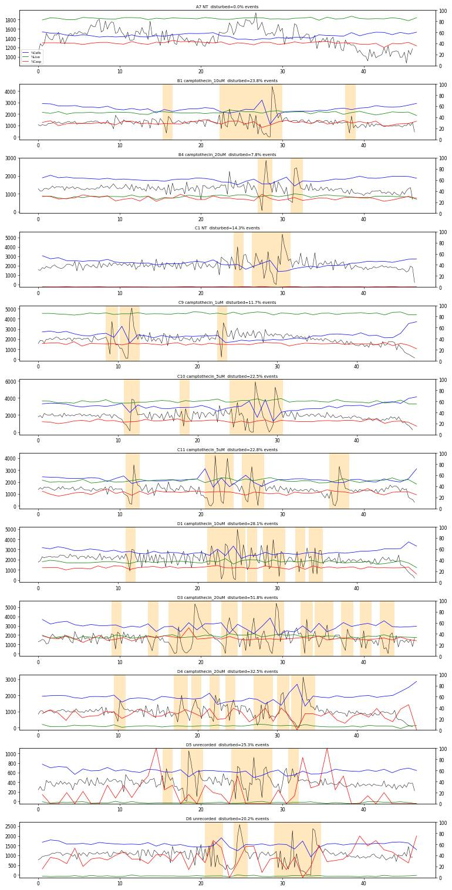
153
thinking
Flow disturbances dip %Cells briefly, but Live% and Caspase% among gated cells hold steady through them (D3: 32.0% stable). Checking end-of-run behaviour next for any ran-dry signature.
154
tool call · Bash
cd /task; python - <<'EOF'
import sys; sys.path.insert(0,'/task/work')
from load import *
d=load_all()
for f,w in zip(layout.file,layout.well):
e=ev(d[f]); t=e['Time'].values; tmax=t.max()
edges=np.arange(tmax-8,tmax+0.001,0.5)
h,_=np.histogram(t,edges)
mid=np.histogram(t,[10,30])[0][0]/20*0.5
# fraction of debris (FSC<40000) in last 2 s vs middle
deb_end=(e['FSC-A'][t>tmax-2]<40000).mean(); deb_mid=(e['FSC-A'][(t>10)&(t<30)]<40000).mean()
print(f"{w:4s} mid/0.5s={mid:6.0f} last8s:", " ".join(f"{x/mid:4.2f}" for x in h), f" debris mid={deb_mid:.2f} end={deb_end:.2f}")
EOF155
tool output
A1 mid/0.5s= 1059 last8s: 0.65 0.61 0.69 0.69 0.68 0.74 0.72 0.73 0.76 0.59 0.67 0.65 0.78 0.83 0.74 0.64 debris mid=0.10 end=0.13 A2 mid/0.5s= 950 last8s: 0.91 0.92 0.88 0.86 0.83 0.84 0.77 0.72 0.73 0.75 0.67 0.71 0.69 0.72 0.69 0.59 debris mid=0.12 end=0.15 A3 mid/0.5s= 1097 last8s: 0.90 0.82 0.80 0.76 0.75 0.75 0.67 0.74 0.70 0.69 0.68 0.75 0.69 0.64 0.65 0.68 debris mid=0.12 end=0.15 A5 mid/0.5s= 849 last8s: 0.91 0.84 0.77 0.68 0.72 0.65 0.72 0.64 0.78 0.74 0.69 0.73 0.69 0.68 0.69 0.76 debris mid=0.12 end=0.14 A7 mid/0.5s= 746 last8s: 0.86 0.81 0.75 0.70 0.65 0.74 0.69 0.69 0.76 0.77 0.71 0.75 0.70 0.70 0.67 0.76 debris mid=0.11 end=0.14 A8 mid/0.5s= 706 last8s: 0.79 0.74 0.69 0.76 0.58 0.64 0.61 0.66 0.64 0.67 0.79 0.61 0.64 0.53 0.51 0.30 debris mid=0.11 end=0.15 A9 mid/0.5s= 933 last8s: 0.85 0.82 0.84 0.83 0.76 0.81 0.75 0.76 0.76 0.73 0.72 0.74 0.66 0.62 0.60 0.64 debris mid=0.12 end=0.12 A10 mid/0.5s= 767 last8s: 0.82 0.71 0.78 0.68 0.62 0.65 0.63 0.59 0.64 0.58 0.70 0.69 0.78 0.62 0.56 0.50 debris mid=0.12 end=0.16 A11 mid/0.5s= 792 last8s: 0.83 0.86 0.80 0.84 0.73 0.74 0.74 0.68 0.73 0.75 0.72 0.65 0.65 0.67 0.67 0.66 debris mid=0.13 end=0.14 B1 mid/0.5s= 668 last8s: 0.84 0.64 0.69 0.78 0.75 0.75 0.81 0.80 0.74 0.71 0.71 0.68 0.75 0.72 0.79 0.89 debris mid=0.12 end=0.15 B2 mid/0.5s= 597 last8s: 0.96 0.86 0.77 0.91 0.71 0.82 0.77 0.89 0.79 0.75 0.74 0.72 0.75 0.74 0.65 0.89 debris mid=0.14 end=0.16 B3 mid/0.5s= 161 last8s: 0.74 0.73 0.80 0.69 0.68 0.78 0.62 0.70 0.60 0.73 0.82 0.92 0.89 0.86 0.69 0.55 debris mid=0.18 end=0.24 B4 mid/0.5s= 668 last8s: 0.85 0.79 0.73 0.75 0.73 0.80 0.87 0.87 0.77 0.81 0.76 0.75 0.70 0.79 0.83 0.94 debris mid=0.16 end=0.18 B5 mid/0.5s= 389 last8s: 0.85 0.88 0.86 0.83 0.74 0.76 0.69 0.75 0.77 0.87 0.71 0.64 0.65 0.64 0.70 0.80 debris mid=0.12 end=0.13 B6 mid/0.5s= 92 last8s: 0.61 0.92 0.87 0.81 0.71 0.78 0.55 0.76 0.98 0.84 0.83 0.87 0.90 0.59 0.44 0.33 debris mid=0.15 end=0.18 C1 mid/0.5s= 1048 last8s: 0.93 0.92 0.89 0.81 0.82 0.83 0.86 0.87 0.94 0.84 0.93 0.83 0.72 0.81 0.63 0.94 debris mid=0.11 end=0.14 C2 mid/0.5s= 900 last8s: 0.84 0.90 0.96 0.85 0.83 0.77 0.83 0.77 0.77 0.84 0.88 0.98 0.89 0.63 0.42 0.22 debris mid=0.10 end=0.13 C3 mid/0.5s= 804 last8s: 0.81 0.77 0.76 0.72 0.72 0.76 0.71 0.67 0.67 0.59 0.77 0.64 0.66 0.66 0.74 0.82 debris mid=0.10 end=0.12 C5 mid/0.5s= 1026 last8s: 0.81 0.77 0.74 0.77 0.70 0.66 0.71 0.73 0.75 0.76 0.83 0.79 0.63 0.50 0.25 0.13 debris mid=0.09 end=0.13 C7 mid/0.5s= 1370 last8s: 0.67 0.78 0.53 0.82 0.70 0.65 0.57 0.79 0.69 0.71 0.76 0.84 0.72 0.56 0.34 0.21 debris mid=0.11 end=0.11 C8 mid/0.5s= 614 last8s: 0.84 0.79 0.86 0.75 0.69 0.76 0.80 0.70 0.71 0.59 0.60 0.60 0.53 0.60 0.62 0.70 debris mid=0.11 end=0.14 C9 mid/0.5s= 1090 last8s: 0.89 0.62 0.64 0.64 0.65 0.69 0.64 0.63 0.66 0.74 0.81 0.61 0.51 0.33 0.22 0.13 debris mid=0.11 end=0.15 C10 mid/0.5s= 970 last8s: 0.89 0.91 0.86 0.81 0.81 0.74 0.82 0.70 0.75 0.80 0.87 0.86 0.79 0.66 0.45 0.26 debris mid=0.13 end=0.17 C11 mid/0.5s= 711 last8s: 0.87 0.95 0.90 0.82 0.99 0.84 0.98 0.87 0.95 1.12 1.11 1.19 0.92 0.95 0.56 0.36 debris mid=0.13 end=0.13 D1 mid/0.5s= 1085 last8s: 0.86 0.94 0.87 0.82 0.82 0.81 0.80 0.91 0.96 0.96 0.89 0.98 0.69 0.55 0.34 0.18 debris mid=0.15 end=0.22 D2 mid/0.5s= 880 last8s: 0.74 0.83 0.80 0.77 0.77 0.77 0.66 0.81 0.79 0.80 0.82 0.77 0.51 0.35 0.19 0.09 debris mid=0.12 end=0.22 D3 mid/0.5s= 872 last8s: 0.97 0.87 0.77 0.72 0.78 0.83 0.70 0.92 0.41 0.36 1.16 0.76 0.79 0.72 0.83 0.79 debris mid=0.12 end=0.12 D4 mid/0.5s= 523 last8s: 0.84 0.93 0.83 0.89 0.72 0.81 0.81 0.83 0.92 0.92 0.82 0.78 0.52 0.37 0.19 0.08 debris mid=0.12 end=0.18 D5 mid/0.5s= 209 last8s: 0.84 0.81 0.78 0.84 0.79 0.81 0.88 0.80 0.89 0.75 0.77 0.65 0.76 0.81 0.83 0.97 debris mid=0.12 end=0.15 D6 mid/0.5s= 523 last8s: 0.92 0.86 0.88 0.88 0.83 0.94 0.96 0.84 0.91 0.77 0.82 0.84 0.96 1.01 1.15 0.89 debris mid=0.16 end=0.18
157
thinking
No well shows a ran-dry pattern; the rate only drops in the final second or so, which is the normal end-of-sample taper. I'm now checking whether intensities drift during the pause and burst periods.
158
tool call · Bash
cd /task; cat > work/qc_drift.py <<'EOF'
import sys; sys.path.insert(0,'/task/work')
import flowkit as fk, pandas as pd, numpy as np, os
from scipy.ndimage import median_filter
RAW='/task/inputs/raw'; layout=pd.read_csv('/task/inputs/plate_layout.csv')
gs=fk.parse_gating_xml('/task/outputs/gates.xml')
rows=[]
for f,w in zip(layout.file,layout.well):
s=fk.Sample(os.path.join(RAW,f)); r=gs.gate_sample(s)
E=pd.DataFrame(s.get_events(source='raw'),columns=s.pnn_labels)
sg=r.get_gate_membership('Single_Cells'); cp=r.get_gate_membership('Caspase_pos'); lv=r.get_gate_membership('Live')
t=E['Time'].values
q=np.quantile(t,np.linspace(0,1,11)) # deciles of events
dec=np.clip(np.searchsorted(q,t,side='right')-1,0,9)
def med_by(mask,ch):
return np.array([np.median(E[ch].values[mask&(dec==i)]) if (mask&(dec==i)).sum()>20 else np.nan for i in range(10)])
fsc=med_by(sg,'FSC-A'); ssc=med_by(sg,'SSC-A'); bl=med_by(cp,'BL1-A')
dead=sg&(E['RL3-A'].values>8000); rl=med_by(dead,'RL3-A')
lvp=np.array([lv[sg&(dec==i)].mean()*100 for i in range(10)])
cpp=np.array([cp[lv&(dec==i)].mean()*100 if (lv&(dec==i)).sum()>0 else np.nan for i in range(10)])
rng=lambda a: round(100*(np.nanmax(a)-np.nanmin(a))/np.nanmedian(a),1)
rows.append(dict(well=w,fsc_range_pct=rng(fsc),ssc_range_pct=rng(ssc),casp_bl1_range_pct=rng(bl),dead_rl3_range_pct=rng(rl),
live_pct_min=round(lvp.min(),1),live_pct_max=round(lvp.max(),1),casp_pct_min=round(np.nanmin(cpp),1),casp_pct_max=round(np.nanmax(cpp),1)))
print(pd.DataFrame(rows).to_string())
EOF
python work/qc_drift.py159
tool output
/task/work/qc_drift.py:20: RuntimeWarning: All-NaN slice encountered rng=lambda a: round(100*(np.nanmax(a)-np.nanmin(a))/np.nanmedian(a),1) /task/work/qc_drift.py:20: RuntimeWarning: All-NaN slice encountered rng=lambda a: round(100*(np.nanmax(a)-np.nanmin(a))/np.nanmedian(a),1) /task/work/qc_drift.py:20: RuntimeWarning: All-NaN slice encountered rng=lambda a: round(100*(np.nanmax(a)-np.nanmin(a))/np.nanmedian(a),1) /task/work/qc_drift.py:20: RuntimeWarning: All-NaN slice encountered rng=lambda a: round(100*(np.nanmax(a)-np.nanmin(a))/np.nanmedian(a),1) /task/work/qc_drift.py:20: RuntimeWarning: All-NaN slice encountered rng=lambda a: round(100*(np.nanmax(a)-np.nanmin(a))/np.nanmedian(a),1) /task/work/qc_drift.py:20: RuntimeWarning: All-NaN slice encountered rng=lambda a: round(100*(np.nanmax(a)-np.nanmin(a))/np.nanmedian(a),1) /task/work/qc_drift.py:20: RuntimeWarning: All-NaN slice encountered rng=lambda a: round(100*(np.nanmax(a)-np.nanmin(a))/np.nanmedian(a),1) well fsc_range_pct ssc_range_pct casp_bl1_range_pct dead_rl3_range_pct live_pct_min live_pct_max casp_pct_min casp_pct_max 0 A1 14.6 17.3 8.6 NaN 100.0 100.0 1.6 2.1 1 A2 5.6 13.1 5.9 NaN 100.0 100.0 1.1 2.1 2 A3 14.8 12.8 9.4 16.2 86.5 88.2 23.7 28.6 3 A5 8.9 9.8 14.5 9.8 64.2 67.1 27.6 30.5 4 A7 8.1 11.1 13.4 21.2 84.1 86.0 38.3 42.2 5 A8 16.0 7.7 20.1 12.6 79.4 82.2 30.8 35.0 6 A9 13.6 14.4 29.5 7.6 79.0 80.6 29.9 33.1 7 A10 8.5 9.4 19.4 10.8 57.0 60.1 24.4 27.4 8 A11 8.4 10.5 16.7 11.5 63.5 65.2 26.7 30.2 9 B1 7.4 8.6 12.9 12.1 46.8 51.0 28.2 31.7 10 B2 8.1 10.1 11.3 7.2 41.6 44.2 21.3 25.3 11 B3 12.0 13.6 32.9 15.5 14.3 18.2 24.1 35.0 12 B4 10.1 10.7 16.1 12.1 27.6 32.0 25.0 30.9 13 B5 7.0 14.2 NaN 10.5 1.7 2.8 14.7 44.2 14 B6 13.1 24.9 NaN 8.9 4.2 7.6 20.0 51.6 15 C1 6.7 16.1 NaN NaN 100.0 100.0 0.3 0.6 16 C2 11.1 11.1 25.4 NaN 100.0 100.0 0.3 0.8 17 C3 6.3 7.5 18.6 23.4 81.9 83.9 22.4 24.5 18 C5 7.8 16.1 18.6 16.1 85.4 87.9 25.4 27.6 19 C7 8.1 9.3 20.0 28.7 90.2 91.2 52.9 55.5 20 C8 8.9 12.4 11.1 11.6 79.0 81.9 27.0 32.4 21 C9 10.0 16.5 21.0 24.0 84.5 86.4 29.6 31.9 22 C10 10.5 11.1 22.4 11.3 57.6 62.6 22.5 25.8 23 C11 8.0 10.2 23.3 8.7 48.6 52.4 26.4 30.4 24 D1 9.1 10.5 27.4 7.4 35.3 39.1 25.4 27.5 25 D2 8.9 12.3 18.4 15.1 41.5 45.4 28.7 30.4 26 D3 8.7 9.9 18.0 16.8 33.7 38.4 30.4 34.6 27 D4 8.4 16.2 16.2 15.4 5.8 8.7 24.0 31.6 28 D5 7.8 11.0 NaN 12.3 1.5 2.5 3.8 45.0 29 D6 6.5 8.7 18.8 5.6 2.1 3.4 31.2 49.1
161
thinking
Composition holds steady across event deciles in every well with enough counts, except the four unrecorded wells, where Caspase% swings widely because each decile has only about 20–70 live events. Next I'll look at the SSC-saturated events.
162
tool call · Bash
cd /task; python - <<'EOF'
import sys; sys.path.insert(0,'/task/work')
from load import *
d=load_all()
for w in ['A1','A7','C5','C7','B3','B6','D4']:
e=ev(d[f'Caspase_primaryneurons_caspase_Group_{w}.fcs'])
sat=e['SSC-A']>=1048575
s=e[sat]; ns=e[~sat]
print(w, f"sat={100*sat.mean():.1f}% FSC-A med sat={s['FSC-A'].median():.0f} vs non={ns['FSC-A'].median():.0f}; FSC q10/q90 sat={s['FSC-A'].quantile(.1):.0f}/{s['FSC-A'].quantile(.9):.0f}; SSC-H med sat={s['SSC-H'].median():.0f}; SSC-H==max {100*(s['SSC-H']>=1048575).mean():.0f}%; RL3>8000 sat={100*(s['RL3-A']>8000).mean():.1f}% non={100*(ns['RL3-A']>8000).mean():.1f}%; BL1>2000 sat={100*(s['BL1-A']>2000).mean():.1f}% non={100*(ns['BL1-A']>2000).mean():.1f}%; SSC-W med sat={s['SSC-W'].median():.0f} non={ns['SSC-W'].median():.0f}")
EOF163
tool output
A1 sat=30.4% FSC-A med sat=472414 vs non=98133; FSC q10/q90 sat=210169/1048575; SSC-H med sat=1010182; SSC-H==max 44%; RL3>8000 sat=0.7% non=0.0%; BL1>2000 sat=58.5% non=2.7%; SSC-W med sat=152 non=84 A7 sat=26.4% FSC-A med sat=352610 vs non=81164; FSC q10/q90 sat=159504/772793; SSC-H med sat=866844; SSC-H==max 29%; RL3>8000 sat=18.7% non=8.5%; BL1>2000 sat=94.2% non=41.1%; SSC-W med sat=148 non=82 C5 sat=39.8% FSC-A med sat=444209 vs non=127795; FSC q10/q90 sat=183060/1048575; SSC-H med sat=1000337; SSC-H==max 43%; RL3>8000 sat=19.2% non=9.7%; BL1>2000 sat=93.7% non=29.2%; SSC-W med sat=154 non=85 C7 sat=31.9% FSC-A med sat=365826 vs non=76379; FSC q10/q90 sat=136022/996954; SSC-H med sat=921996; SSC-H==max 38%; RL3>8000 sat=18.0% non=5.3%; BL1>2000 sat=96.5% non=52.2%; SSC-W med sat=153 non=79 B3 sat=13.2% FSC-A med sat=343834 vs non=73122; FSC q10/q90 sat=173234/723215; SSC-H med sat=895837; SSC-H==max 24%; RL3>8000 sat=71.0% non=66.0%; BL1>2000 sat=91.8% non=31.6%; SSC-W med sat=135 non=81 B6 sat=15.4% FSC-A med sat=306574 vs non=81346; FSC q10/q90 sat=152378/564312; SSC-H med sat=822794; SSC-H==max 19%; RL3>8000 sat=93.1% non=73.3%; BL1>2000 sat=92.6% non=38.8%; SSC-W med sat=131 non=82 D4 sat=26.6% FSC-A med sat=349915 vs non=84052; FSC q10/q90 sat=154194/816881; SSC-H med sat=928228; SSC-H==max 34%; RL3>8000 sat=91.6% non=76.0%; BL1>2000 sat=94.9% non=38.6%; SSC-W med sat=140 non=83
165
thinking
SSC-saturated events are clumps that make up 13–40% of every well, so the Cells gate removes them and I won't flag individual wells. I'm checking caspase+ intensity per well next, then writing the flags and notes.
166
tool call · Bash
cd /task; python - <<'EOF'
import flowkit as fk, pandas as pd, numpy as np, os
RAW='/task/inputs/raw'; layout=pd.read_csv('/task/inputs/plate_layout.csv')
gs=fk.parse_gating_xml('/task/outputs/gates.xml')
rows=[]
for f,w in zip(layout.file,layout.well):
s=fk.Sample(os.path.join(RAW,f)); r=gs.gate_sample(s)
E=pd.DataFrame(s.get_events(source='raw'),columns=s.pnn_labels)
sg=r.get_gate_membership('Single_Cells'); cp=r.get_gate_membership('Caspase_pos'); lv=r.get_gate_membership('Live')
rl=E['RL3-A'].values; bl=E['BL1-A'].values
rows.append(dict(well=w,n=len(E),sing=sg.sum(),zbright_n=int((sg&(rl>8000)).sum()),zbright_pct=round(100*(sg&(rl>8000)).sum()/sg.sum(),3),
rl3_p999=round(np.percentile(rl[sg],99.9)),rl3_max=round(rl[sg].max()),casp_med_bl1=round(np.median(bl[cp])) if cp.sum() else None,
live_bl1_p99=round(np.percentile(bl[lv],99)), sat_ssc_pct=round(100*(E['SSC-A']>=1048575).mean(),1),
sat_fl_pct=round(100*((E['BL1-A']>=1048575)|(E['RL3-A']>=1048575)).mean(),3)))
q=pd.DataFrame(rows); print(q.to_string()); q.to_csv('/task/work/qc_fl.csv',index=False)
EOF167
tool output
well n sing zbright_n zbright_pct rl3_p999 rl3_max casp_med_bl1 live_bl1_p99 sat_ssc_pct sat_fl_pct 0 A1 90651 42649 1 0.002 710 27492 2644 2551 30.4 0.000 1 A2 81008 41027 0 0.000 616 4485 2576 2383 26.9 0.000 2 A3 95933 47498 3348 7.049 91698 155157 3113 9123 26.7 0.001 3 A5 73753 35542 9223 25.950 129257 269047 3156 9404 28.9 0.087 4 A7 64975 32690 3182 9.734 120850 177901 3602 10484 26.4 0.003 5 A8 60216 28919 3542 12.248 106914 161600 3930 12903 29.4 0.007 6 A9 80278 43270 5374 12.420 128064 204529 4996 13683 24.8 0.005 7 A10 64936 34194 11005 32.184 138513 199513 3496 10460 25.2 0.249 8 A11 68296 35019 9134 26.083 120196 200273 3662 11009 27.2 0.069 9 B1 58310 29500 11926 40.427 141739 215848 3332 10569 27.4 0.401 10 B2 51930 28116 11378 40.468 134764 326513 2916 8578 23.9 0.166 11 B3 13995 9353 6612 70.694 129399 172723 3516 17428 13.2 0.036 12 B4 58782 33677 17475 51.890 125430 203213 3458 14031 20.1 0.180 13 B5 33754 16921 15329 90.592 141802 184444 2843 11346 26.5 0.812 14 B6 8004 5086 3953 77.723 107418 157881 3321 16868 15.4 0.075 15 C1 95817 37808 1 0.003 500 23591 2524 1453 35.9 0.000 16 C2 80166 33236 0 0.000 524 7578 2447 1524 34.0 0.000 17 C3 68270 27607 2734 9.903 112073 163570 3558 11054 36.9 0.003 18 C5 88646 35470 3572 10.070 116141 188128 3812 12356 39.8 0.050 19 C7 119052 50316 3053 6.068 116353 189337 6163 18509 31.9 0.003 20 C8 52267 21023 2921 13.894 123570 186350 4001 11950 35.5 0.063 21 C9 92282 37331 3527 9.448 118778 294891 5577 15061 36.3 0.038 22 C10 88797 40703 11682 28.701 125501 367586 4377 12258 30.4 0.145 23 C11 63651 30299 10923 36.051 134646 194244 4090 12296 29.7 0.361 24 D1 97824 49287 23931 48.554 130054 257890 5202 15326 24.7 0.338 25 D2 73937 38907 16392 42.131 138254 254990 6174 17650 26.6 0.261 26 D3 77334 36507 18378 50.341 130806 200178 6110 18496 28.5 0.497 27 D4 46763 23794 18475 77.646 146426 216063 3604 13363 26.6 0.907 28 D5 18412 10091 8614 85.363 132006 181935 3183 5105 25.4 1.054 29 D6 46753 25834 19479 75.401 115373 172985 3183 11291 22.5 0.725
169
agent
Writing `flags.csv` now. Eight wells are flagged: the four mismatched single-stain controls, the four unrecorded wells with too few live events, and D3 for repeated flow interruptions.
170
tool call · Bash
cd /task; cat > work/make_flags.py <<'EOF'
import pandas as pd
layout=pd.read_csv('/task/inputs/plate_layout.csv')
F={}
F['A2']=('bad_control',"Zombie NIR-only control shows no Zombie signal: 0 of 41027 singlets RL3-A>8000 (0.000%) vs 3182/32690 (9.7%) in NT double-stain A7 and 3348/47498 (7.0%) in A3; singlet RL3-A 99.9th pct = 616 (unstained A1 = 710; A7 = 120850); Live = 41026/41027 (99.998%), indistinguishable from unstained A1 (99.995%). Behaves as an unstained well, so it cannot serve as the Zombie NIR reference (still caspase-negative: Caspase_pos 1.58% of Live vs A1 1.79%). confidence=high")
F['C2']=('bad_control',"Zombie NIR-only control shows no Zombie signal: 0 of 33236 singlets RL3-A>8000 (0.000%) vs 3053/50316 (6.1%) in NT double-stain C7 and 2734/27607 (9.9%) in C3; singlet RL3-A 99.9th pct = 524 (unstained C1 = 500; C7 = 116353); Live = 33235/33236 (99.997%), same as unstained C1 (99.995%). Behaves as an unstained well, so not a valid Zombie NIR control. confidence=high")
F['A3']=('bad_control',"Caspase-only control contains Zombie NIR: 3348 of 47498 singlets (7.0%) are Zombie-bright (RL3-A>8000), singlet RL3-A 99.9th pct = 91698 vs 710 in unstained A1 and 616 in A2; Live = 87.3% (A7 double-stain 85.0%). BL1/RL3 profile is that of a double-stained NT well, so it cannot serve as the Zombie-negative reference; the Zombie dye appears to have gone into column 3 instead of column 2 (A2 has none). confidence=high")
F['C3']=('bad_control',"Caspase-only control contains Zombie NIR: 2734 of 27607 singlets (9.9%) are Zombie-bright (RL3-A>8000), singlet RL3-A 99.9th pct = 112073 vs 500 in unstained C1 and 524 in C2; Live = 83.0% (C7 double-stain 90.6%). Same column-2/column-3 Zombie mix-up as A2/A3, so not a valid Zombie-negative reference. confidence=high")
F['B5']=('too_few_events',"Only 378 Live events (Caspase_pos = 115) of 33754 acquired (16921 singlets, 90.6% Zombie-bright RL3-A>8000; Live = 2.2% of singlets); below the 1000-Live-event minimum for a Caspase_pos % of Live. The estimate is unstable: Caspase_pos % of Live ranges 14.7-44.2% across the 10 sequential event-deciles of the run (stable wells vary <=6 points). Treatment/stain not in the plate map (unrecorded), so the well also cannot be interpreted. confidence=high")
F['B6']=('too_few_events',"Lowest acquisition on the plate: 8004 events in 47.4 s (~170 events/s vs plate median ~1500/s; plate median total ~68000), 5086 singlets of which 77.7% Zombie-bright; only 308 Live events and 101 Caspase_pos. Caspase_pos % of Live ranges 20.0-51.6% across the 10 sequential event-deciles. Treatment/stain unrecorded. confidence=high")
F['D5']=('too_few_events',"18412 events in 46.4 s (~390 events/s), 10091 singlets of which 85.4% Zombie-bright; only 201 Live events and 35 Caspase_pos (fewest on the plate). Caspase_pos % of Live ranges 3.8-45.0% across the 10 sequential event-deciles. Treatment/stain unrecorded. confidence=high")
F['D6']=('too_few_events',"Only 687 Live events (Caspase_pos = 264) of 46753 acquired (25834 singlets, 75.4% Zombie-bright; Live = 2.7% of singlets); below the 1000-Live-event minimum. Caspase_pos % of Live ranges 31.2-49.1% across the 10 sequential event-deciles. Treatment/stain unrecorded. Run also has 3 flow pauses >150 ms (longest 357 ms at t=33.4 s, rate 0 events/0.25 s at 33.5 s, then burst to 590/0.25 s). confidence=medium")
F['D3']=('clog_or_interrupted_flow',"Repeated flow interruptions throughout the run: 7 inter-event gaps >150 ms (sum 1.47 s; e.g. 289 ms at t=43.0 s), 16 quarter-second bins below 30% of the median rate (3 events at 16.75 s, 5 at 23.0 s, 3 at 28.75 s, 2 at 43.0 s vs median 412 per 0.25 s), each followed by a burst up to 1358 per 0.25 s (3.3x median). Event-rate CV 0.42 (stable wells 0.13-0.20; next worst D4 0.34); 52% of events fall within 0.5 s of a pause/burst. %Cells drops 54.6 -> 50.4% in disturbed windows (debris bursts); Live % (34.6 vs 36.6) and Caspase_pos % (32.0 vs 31.7) are not visibly shifted, so re-acquisition is preferred but the percentages are probably not badly biased. confidence=medium")
rows=[]
for f,w in zip(layout.file,layout.well):
if w in F: rows.append(dict(file=f,well=w,usable='no',reason_category=F[w][0],evidence=F[w][1]))
else: rows.append(dict(file=f,well=w,usable='yes',reason_category='ok',evidence=''))
df=pd.DataFrame(rows); df.to_csv('/task/outputs/flags.csv',index=False)
print(df[['well','usable','reason_category']].to_string())
EOF
python work/make_flags.py171
tool output
well usable reason_category 0 A1 yes ok 1 A2 no bad_control 2 A3 no bad_control 3 A5 yes ok 4 A7 yes ok 5 A8 yes ok 6 A9 yes ok 7 A10 yes ok 8 A11 yes ok 9 B1 yes ok 10 B2 yes ok 11 B3 yes ok 12 B4 yes ok 13 B5 no too_few_events 14 B6 no too_few_events 15 C1 yes ok 16 C2 no bad_control 17 C3 no bad_control 18 C5 yes ok 19 C7 yes ok 20 C8 yes ok 21 C9 yes ok 22 C10 yes ok 23 C11 yes ok 24 D1 yes ok 25 D2 yes ok 26 D3 no clog_or_interrupted_flow 27 D4 yes ok 28 D5 no too_few_events 29 D6 no too_few_events
173
thinking
"Stable wells vary ≤6 points" only holds for wells with at least 10,000 Live events, since B3 and D4 spread 10.9 and 7.6. I'm rewording that evidence to match.
174
tool call · Bash
cd /task; sed -i 's/(stable wells vary <=6 points)/(wells with >=10000 Live events vary <=5.9 points)/' work/make_flags.py && python work/make_flags.py >/dev/null && grep -c "5.9 points" outputs/flags.csv
175
tool output
1
176
tool call · Write
{
"file_path": "/task/outputs/notes.md",
"content": "# CellEvent caspase-3/7 + Zombie NIR, mouse primary neurons (Attune NxT, 20-Mar-2023)\n\n## Gates\nI built one FlowKit strategy (`gates.xml`) and applied it unchanged to all 30 files. It uses full data, raw uncompensated channels and detector IDs.\n- **Cells** (`EllipsoidGate`, FSC-A \u00d7 SSC-A on logicle axes, T=1048576, W=0.5, M=6.02). The ellipse is centred at FSC-A \u2248 1.1e5 and SSC-A \u2248 1.9e5, tilted 52\u00b0 along the scatter diagonal.\n - It keeps the intact-neuron island (FSC ~1.6e5, SSC ~1.4e5) and the smaller, lower-FSC apoptotic/dying cloud (FSC 4e4\u20131.5e5). Caspase+ and Zombie+ cells sit in that cloud, so cutting it would bias both read-outs.\n - It excludes near-threshold debris (FSC-A < ~4e4; trigger FSC 25,000) and everything above SSC-A ~8.2e5. That includes the SSC-A ceiling (1,048,575), which holds 13\u201340% of events in every well. The ceiling events are clumps: median FSC-A 3.5\u20134.7e5, SSC-W ~150 vs ~82, and highly autofluorescent.\n- **Single_Cells** (4-vertex polygon, SSC-A \u00d7 SSC-H). It follows the singlet diagonal, SSC-H/SSC-A \u2248 0.65 at SSC-A 4e4 down to 0.50 at 8.5e5, with the upper edge at 1.3\u21921.0. Events with low SSC-H for their SSC-A (doublets/aggregates) are removed: 89\u201396% of Cells pass.\n- **Live** (rectangle: RL3-A \u2264 2,000, SSC-A 40,000\u2013850,000).\n - Boundary set from unstained A1/C1: singlet RL3-A 99.9th percentile 710/500, maximum \u22481,260 outside rare outliers. A2/C2 turned out to be Zombie-free, so they behave the same (616/524).\n - The cut sits at the low-SSC valley (1.6\u20133.2k) between the Zombie-negative/dim cells and the separate Zombie-bright population (1e4\u20131.3e5). That bright population falls entirely outside the gate in all treated wells.\n- **Caspase_pos** (rectangle: BL1-A \u2265 2,000, SSC-A 40,000\u2013850,000).\n - In A1/C1 and A2/C2, caspase-negative low-SSC events end at ~1,600\u20132,000. Stained wells have a valley at 1.6\u20132.5k below the dim CellEvent+ peak (2.5\u20134k; brighter, 3\u201312k, in C7/D1\u2013D3).\n - Background above the cut in A1/C1/A2/C2 is 1.8/0.4/1.6/0.5%, from high-SSC autofluorescence.\n- **SSC-A limits on both rectangles.** They span the whole Cells range (SSC-A 4.4e4\u20138.2e5), so they drop no gated cell. The scatter extremes are already removed by Cells.\n\n## Quality control\n- **Metadata.** Every file has identical settings: voltages, FSC trigger 25,000, 200 \u00b5L/min, ~47 s / 155\u2013159 \u00b5L, run in plate order. BL1/RL3 never saturate (\u22641.05% at the RL3 maximum, all dead cells). SSC-A saturation is plate-wide, set by the voltage, and is handled by the Cells gate rather than flagged per well.\n- **Stain identity.** I checked each control against its expected staining:\n - A2/C2 (\"Zombie only\") have 0 Zombie-bright singlets and RL3 identical to unstained.\n - A3/C3 (\"caspase only\") carry 7\u201310% Zombie-bright cells.\n - This looks like Zombie dye pipetted into column 3 instead of column 2 in both genotypes, so all four are flagged `bad_control`. A1/C1 and the vehicle/untreated wells behave as expected.\n- **Time.** I looked at event rate in 0.25 s bins, inter-event gaps, scatter medians, and Live%/Caspase% per event-decile.\n - Stable wells: rate CV 0.13\u20130.20, no gap >150 ms.\n - Several late-run wells show brief partial clogs (0.25\u20130.5 s stop followed by a burst). B1, B4, C1, C2, C7, C9\u2013C11, D1 and D4 have 1\u20133 each, which only lowers %Cells transiently; Live% and Caspase% are unchanged (decile spread \u22646 points), so they stay usable.\n - D3 is the outlier: 7 pauses, CV 0.42, 52% of events in disturbed windows. It is flagged `clog_or_interrupted_flow` (medium confidence).\n - No well ran dry: every run lasted 46\u201347 s, with only the normal end-of-sample taper in the last ~1.5 s.\n- **Event sufficiency.** I required \u22651,000 Live events (the parent of Caspase_pos). The four wells that fail are the unrecorded wells: B5 378, B6 308 (8,004 total), D5 201, D6 687. All are \u226575% Zombie-bright, and their decile Caspase% swings 15\u201350 points. B3 (1,497 Live, 14k events) and D4 (1,669) pass but are imprecise.\n- **Not flagged.**\n - The 20 \u00b5M replicates disagree (Live 16% vs 30% for B3/B4; 36% vs 7% for D3/D4).\n - Untreated A7/C7 have more Caspase_pos (41/54%) than DMSO or treated wells (23\u201333%). Both rows show this, so it reads as systematic rather than a single-well fault.\n\n## Deviations from the strategy\n1. Live: the strategy says to use caspase-only A3/C3 as Zombie-negative references. They contain Zombie NIR, so the boundary was set from A1/C1 plus the Zombie-free A2/C2. A3/C3 were used only to place the valley.\n2. Caspase_pos: the cut is not fully above every unstained event. 0.4\u20131.8% of A1/C1/A2/C2 live events (high-SSC autofluorescence, up to ~5k) exceed it, because a cut above that tail would bisect the dim caspase+ peak.\n3. Cells is an ellipse on logicle (log-like) axes rather than linear; the shape is as specified.\n4. No time gate was added (not in the strategy). Flow problems are handled by flags only.\n"
}177
tool output
File created successfully at: /task/outputs/notes.md (file state is current in your context — no need to Read it back)
179
tool call · Bash
cd /task; python - <<'EOF'
p='/task/outputs/notes.md'; s=open(p).read()
s=s.replace("B1, B4, C1, C2, C7, C9–C11, D1 and D4 have 1–3 each","A11, B1, B4, C1, C2, C7, C9–C11, D1 and D4 have 1–3 each")
s=s.replace("Live% and Caspase% are unchanged (decile spread ≤6 points)","Live% and Caspase% are unchanged (decile spread ≤6 points; D4 7.6, from its few Live events)")
s=s.replace("It excludes near-threshold debris (FSC-A < ~4e4; trigger FSC 25,000)","It excludes near-threshold low-FSC/low-SSC debris (FSC-A ≲ 3–4e4, SSC-A < 4.4e4; trigger FSC 25,000)")
open(p,'w').write(s)
EOF
wc -w outputs/notes.md
# final validation
python - <<'EOF'
import flowkit as fk, pandas as pd, numpy as np, os
gs=fk.parse_gating_xml('/task/outputs/gates.xml')
print(gs.get_gate_ids())
c=pd.read_csv('/task/outputs/counts.csv'); fl=pd.read_csv('/task/outputs/flags.csv')
print(c.shape, list(c.columns)); print(fl.shape, list(fl.columns))
assert len(c)==120 and len(fl)==30
assert set(fl.usable)<= {'yes','no'}
assert all((fl.usable=='yes')==(fl.reason_category=='ok'))
assert all(fl[fl.usable=='no'].evidence.str.contains('confidence=(high|medium|low)'))
lay=pd.read_csv('/task/inputs/plate_layout.csv')
# recompute counts from saved gates and compare
bad=0
for f in lay.file[::7]:
s=fk.Sample(os.path.join('/task/inputs/raw',f)); r=gs.gate_sample(s)
for p in ['Cells','Single_Cells','Live','Caspase_pos']:
v=c[(c.file==f)&(c.population==p)]['count'].iloc[0]
if v!=r.get_gate_count(p): bad+=1
print('mismatches',bad)
print(c.groupby('population')['count'].sum())
print(c.population.unique(), c.parent_population.unique())
EOF180
tool output
789 outputs/notes.md
<stdin>:9: UserWarning: This pattern is interpreted as a regular expression, and has match groups. To actually get the groups, use str.extract.
[('Cells', ('root',)), ('Single_Cells', ('root', 'Cells')), ('Live', ('root', 'Cells', 'Single_Cells')), ('Caspase_pos', ('root', 'Cells', 'Single_Cells', 'Live'))]
(120, 6) ['file', 'well', 'population', 'count', 'parent_population', 'pct_of_parent']
(30, 5) ['file', 'well', 'usable', 'reason_category', 'evidence']
mismatches 0
population
Caspase_pos 150039
Cells 1034768
Live 624942
Single_Cells 961674
Name: count, dtype: int64
['Cells' 'Single_Cells' 'Live' 'Caspase_pos'] ['all_events' 'Cells' 'Single_Cells' 'Live']182
agent
The on-disk change to `notes.md` is my own patch. At 789 words it's a bit long for "one page", so I'll tighten it.
183
tool call · Read
{
"file_path": "/task/outputs/notes.md"
}184
tool output
1 # CellEvent caspase-3/7 + Zombie NIR, mouse primary neurons (Attune NxT, 20-Mar-2023)
2
3 ## Gates
4 I built one FlowKit strategy (`gates.xml`) and applied it unchanged to all 30 files. It uses full data, raw uncompensated channels and detector IDs.
5 - **Cells** (`EllipsoidGate`, FSC-A × SSC-A on logicle axes, T=1048576, W=0.5, M=6.02). The ellipse is centred at FSC-A ≈ 1.1e5 and SSC-A ≈ 1.9e5, tilted 52° along the scatter diagonal.
6 - It keeps the intact-neuron island (FSC ~1.6e5, SSC ~1.4e5) and the smaller, lower-FSC apoptotic/dying cloud (FSC 4e4–1.5e5). Caspase+ and Zombie+ cells sit in that cloud, so cutting it would bias both read-outs.
7 - It excludes near-threshold low-FSC/low-SSC debris (FSC-A ≲ 3–4e4, SSC-A < 4.4e4; trigger FSC 25,000) and everything above SSC-A ~8.2e5. That includes the SSC-A ceiling (1,048,575), which holds 13–40% of events in every well. The ceiling events are clumps: median FSC-A 3.5–4.7e5, SSC-W ~150 vs ~82, and highly autofluorescent.
8 - **Single_Cells** (4-vertex polygon, SSC-A × SSC-H). It follows the singlet diagonal, SSC-H/SSC-A ≈ 0.65 at SSC-A 4e4 down to 0.50 at 8.5e5, with the upper edge at 1.3→1.0. Events with low SSC-H for their SSC-A (doublets/aggregates) are removed: 89–96% of Cells pass.
9 - **Live** (rectangle: RL3-A ≤ 2,000, SSC-A 40,000–850,000).
10 - Boundary set from unstained A1/C1: singlet RL3-A 99.9th percentile 710/500, maximum ≈1,260 outside rare outliers. A2/C2 turned out to be Zombie-free, so they behave the same (616/524).
11 - The cut sits at the low-SSC valley (1.6–3.2k) between the Zombie-negative/dim cells and the separate Zombie-bright population (1e4–1.3e5). That bright population falls entirely outside the gate in all treated wells.
12 - **Caspase_pos** (rectangle: BL1-A ≥ 2,000, SSC-A 40,000–850,000).
13 - In A1/C1 and A2/C2, caspase-negative low-SSC events end at ~1,600–2,000. Stained wells have a valley at 1.6–2.5k below the dim CellEvent+ peak (2.5–4k; brighter, 3–12k, in C7/D1–D3).
14 - Background above the cut in A1/C1/A2/C2 is 1.8/0.4/1.6/0.5%, from high-SSC autofluorescence.
15 - **SSC-A limits on both rectangles.** They span the whole Cells range (SSC-A 4.4e4–8.2e5), so they drop no gated cell. The scatter extremes are already removed by Cells.
16
17 ## Quality control
18 - **Metadata.** Every file has identical settings: voltages, FSC trigger 25,000, 200 µL/min, ~47 s / 155–159 µL, run in plate order. BL1/RL3 never saturate (≤1.05% at the RL3 maximum, all dead cells). SSC-A saturation is plate-wide, set by the voltage, and is handled by the Cells gate rather than flagged per well.
19 - **Stain identity.** I checked each control against its expected staining:
20 - A2/C2 ("Zombie only") have 0 Zombie-bright singlets and RL3 identical to unstained.
21 - A3/C3 ("caspase only") carry 7–10% Zombie-bright cells.
22 - This looks like Zombie dye pipetted into column 3 instead of column 2 in both genotypes, so all four are flagged `bad_control`. A1/C1 and the vehicle/untreated wells behave as expected.
23 - **Time.** I looked at event rate in 0.25 s bins, inter-event gaps, scatter medians, and Live%/Caspase% per event-decile.
24 - Stable wells: rate CV 0.13–0.20, no gap >150 ms.
25 - Several late-run wells show brief partial clogs (0.25–0.5 s stop followed by a burst). A11, B1, B4, C1, C2, C7, C9–C11, D1 and D4 have 1–3 each, which only lowers %Cells transiently; Live% and Caspase% are unchanged (decile spread ≤6 points; D4 7.6, from its few Live events), so they stay usable.
26 - D3 is the outlier: 7 pauses, CV 0.42, 52% of events in disturbed windows. It is flagged `clog_or_interrupted_flow` (medium confidence).
27 - No well ran dry: every run lasted 46–47 s, with only the normal end-of-sample taper in the last ~1.5 s.
28 - **Event sufficiency.** I required ≥1,000 Live events (the parent of Caspase_pos). The four wells that fail are the unrecorded wells: B5 378, B6 308 (8,004 total), D5 201, D6 687. All are ≥75% Zombie-bright, and their decile Caspase% swings 15–50 points. B3 (1,497 Live, 14k events) and D4 (1,669) pass but are imprecise.
29 - **Not flagged.**
30 - The 20 µM replicates disagree (Live 16% vs 30% for B3/B4; 36% vs 7% for D3/D4).
31 - Untreated A7/C7 have more Caspase_pos (41/54%) than DMSO or treated wells (23–33%). Both rows show this, so it reads as systematic rather than a single-well fault.
32
33 ## Deviations from the strategy
34 1. Live: the strategy says to use caspase-only A3/C3 as Zombie-negative references. They contain Zombie NIR, so the boundary was set from A1/C1 plus the Zombie-free A2/C2. A3/C3 were used only to place the valley.
35 2. Caspase_pos: the cut is not fully above every unstained event. 0.4–1.8% of A1/C1/A2/C2 live events (high-SSC autofluorescence, up to ~5k) exceed it, because a cut above that tail would bisect the dim caspase+ peak.
36 3. Cells is an ellipse on logicle (log-like) axes rather than linear; the shape is as specified.
37 4. No time gate was added (not in the strategy). Flow problems are handled by flags only.
38 186
tool call · Write
{
"file_path": "/task/outputs/notes.md",
"content": "# CellEvent caspase-3/7 + Zombie NIR, mouse primary neurons (Attune NxT, 20-Mar-2023)\n\n## Gates\nOne FlowKit strategy (`gates.xml`), applied unchanged to all 30 files: full data, raw uncompensated channels, detector IDs.\n- **Cells**: `EllipsoidGate` on logicle FSC-A \u00d7 SSC-A (T=1048576, W=0.5, M=6.02), centred at FSC \u2248 1.1e5 / SSC \u2248 1.9e5, tilted 52\u00b0 along the scatter diagonal.\n - Keeps the intact-neuron island (FSC ~1.6e5, SSC ~1.4e5) and the lower-FSC apoptotic/dying cloud (FSC 4e4\u20131.5e5), where caspase+ and Zombie+ cells sit.\n - Excludes near-threshold debris (FSC-A \u2272 3\u20134e4, SSC-A < 4.4e4; trigger FSC 25,000) and SSC-A > ~8.2e5. That includes the SSC-A ceiling (1,048,575), which holds 13\u201340% of events in every well; these are clumps (median FSC-A 3.5\u20134.7e5, SSC-W ~150 vs ~82, autofluorescent).\n- **Single_Cells**: 4-vertex polygon on SSC-A \u00d7 SSC-H along the singlet diagonal. The lower edge runs SSC-H/SSC-A 0.65 \u2192 0.50 (SSC-A 4e4 \u2192 8.5e5), the upper edge 1.3 \u2192 1.0. Low-SSC-H doublets are removed; 89\u201396% of Cells pass.\n- **Live**: rectangle RL3-A \u2264 2,000, SSC-A 40,000\u2013850,000.\n - Set from unstained A1/C1: singlet RL3-A 99.9th percentile 710/500, ~1,260 maximum apart from rare outliers. A2/C2 are Zombie-free and give 616/524.\n - The cut sits in the stained wells' low-SSC valley (1.6\u20133.2k), below the separate Zombie-bright population (1e4\u20131.3e5), which falls wholly outside the gate in all treated wells.\n- **Caspase_pos**: rectangle BL1-A \u2265 2,000, SSC-A 40,000\u2013850,000.\n - Set from A1/C1 and A2/C2, where caspase-negative low-SSC events end at ~1.6\u20132k. The cut is at the stained wells' valley (1.6\u20132.5k), below the dim CellEvent+ peak (2.5\u20134k; 3\u201312k in C7, D1\u2013D3).\n - Residual background above the cut: A1/C1/A2/C2 = 1.8/0.4/1.6/0.5% (high-SSC autofluorescence).\n- **SSC-A limits on the rectangles** span the whole Cells range (4.4e4\u20138.2e5), so they drop no gated cell; Cells already removes the scatter extremes.\n\n## Quality control\n- **Metadata.** Settings are identical in every file (voltages, trigger, 200 \u00b5L/min, ~47 s / 155\u2013159 \u00b5L, plate order). BL1/RL3 do not saturate (\u22641.05% of events at RL3 max, all dead cells). SSC-A saturation is plate-wide and set by the voltage; the Cells gate handles it, so no well is flagged for it.\n- **Stain identity.** A2/C2 (\"Zombie only\") have 0 Zombie-bright singlets and RL3 identical to unstained. A3/C3 (\"caspase only\") carry 7\u201310% Zombie-bright cells. This looks like Zombie added to column 3 instead of column 2 in both genotypes, so all four are flagged `bad_control`. A1/C1, A5/C5 and A7/C7 stain as expected.\n- **Time.** Checked event rate (0.25 s bins), inter-event gaps, scatter medians, and Live%/Caspase% per event-decile.\n - Stable wells: rate CV 0.13\u20130.20, no gap >150 ms.\n - A11, B1, B4, C1, C2, C7, C9\u2013C11, D1 and D4 have 1\u20133 brief partial clogs each (0.25\u20130.5 s stop, then a burst). These only lower %Cells transiently; decile Live%/Caspase% stays within \u22646 points (D4 7.6, few Live events), so these wells stay usable.\n - D3 is the outlier (7 pauses, CV 0.42, 52% of events in disturbed windows) and is flagged `clog_or_interrupted_flow` (medium confidence).\n - No well ran dry: all runs last 46\u201347 s, with only the normal taper in the final ~1.5 s.\n- **Event sufficiency.** Criterion: \u22651,000 Live events, since Live is the parent of Caspase_pos.\n - The four unrecorded wells fail: B5 378, B6 308 (8,004 total), D5 201, D6 687. All are \u226575% Zombie-bright, and their Caspase% varies by 18\u201341 points between event-deciles. They are flagged `too_few_events`, with the unrecorded identity noted.\n - B3 (1,497 Live) and D4 (1,669) pass but are imprecise.\n- **Noted, not flagged.**\n - The 20 \u00b5M replicates disagree (Live 16 vs 30% for B3/B4; 36 vs 7% for D3/D4).\n - A7/C7 (untreated) have more Caspase_pos (41/54%) than DMSO/treated wells (23\u201333%). Both rows show it, so it looks systematic.\n\n## Deviations from the strategy\n1. Live: the strategy names caspase-only A3/C3 as Zombie-negative references, but they contain Zombie NIR. The boundary was set from A1/C1 and the Zombie-free A2/C2; A3/C3 and the treated wells were used only to locate the valley and confirm the bright population is excluded.\n2. Caspase_pos: the cut is not above every unstained event. 0.4\u20131.8% of A1/C1/A2/C2 live events (high-SSC autofluorescence, up to ~5k) exceed it, because a higher cut would bisect the dim caspase+ peak.\n3. Cells is an ellipse on logicle axes rather than linear axes; the shape is as specified.\n4. No time gate was added (none is in the strategy); flow problems are handled through flags.\n"
}187
tool output
The file /task/outputs/notes.md has been updated successfully. (file state is current in your context — no need to Read it back)
188
tool call · Bash
cd /task; wc -w outputs/notes.md; grep -n '^## ' outputs/notes.md; ls -la outputs; head -3 outputs/counts.csv; python -c "
import pandas as pd; f=pd.read_csv('/task/outputs/flags.csv'); print(f[f.usable=='no'][['well','reason_category']].to_string()); print(f.evidence.str.len().describe())"189
tool output
726 outputs/notes.md 3:## Gates 17:## Quality control 32:## Deviations from the strategy total 40 drwxr-xr-x 2 root root 4096 Nov 10 17:23 . drwxr-xr-x 5 root root 4096 Nov 10 17:08 .. -rw-r--r-- 1 root root 9475 Nov 10 17:17 counts.csv -rw-r--r-- 1 root root 5534 Nov 10 17:22 flags.csv -rw-r--r-- 1 root root 3394 Nov 10 17:17 gates.xml -rw-r--r-- 1 root root 4657 Nov 10 17:23 notes.md file,well,population,count,parent_population,pct_of_parent Caspase_primaryneurons_caspase_Group_A1.fcs,A1,Cells,46252,all_events,51.0221 Caspase_primaryneurons_caspase_Group_A1.fcs,A1,Single_Cells,42649,Cells,92.2101 well reason_category 1 A2 bad_control 2 A3 bad_control 13 B5 too_few_events 14 B6 too_few_events 16 C2 bad_control 17 C3 bad_control 26 D3 clog_or_interrupted_flow 28 D5 too_few_events 29 D6 too_few_events count 9.000000 mean 413.222222 std 118.512423 min 270.000000 25% 332.000000 50% 406.000000 75% 460.000000 max 675.000000 Name: evidence, dtype: float64
191
agent
I gated all 30 wells with one set of four gates and wrote the four files to `/task/outputs/`. Nine wells are flagged as unusable. I said "eight" earlier; it is nine: four controls, four unrecorded wells and D3. The gates reload with `flowkit.parse_gating_xml`, and a spot check of 5 wells re-gated with the saved file reproduced `counts.csv` exactly.
**Gates** (all on raw, uncompensated data):
- **`Cells`:** an ellipse along the FSC-A/SSC-A diagonal, drawn on log-like (logicle) axes. It keeps the intact neurons and the smaller apoptotic cells. It drops debris just above the trigger and the SSC-A ceiling. In every well 13–40% of events sit at that ceiling; they look like clumps (very large FSC, wide pulses).
- **`Single_Cells`:** a 4-point polygon along the SSC-A vs SSC-H diagonal; 89–96% of `Cells` pass.
- **`Live`:** RL3-A ≤ 2,000. This is just above the unstained wells (A1/C1) and in the gap before the Zombie-bright dead cells.
- **`Caspase_pos`:** BL1-A ≥ 2,000. Unstained and Zombie-only wells still show 0.4–1.8% above this line, from autofluorescence in high-SSC cells. A cut high enough to remove that would split the dim caspase-positive peak (2,500–4,000) in half.
**Flagged wells:**
| Wells | Category | Why |
|---|---|---|
| A2, C2 (Zombie-only) | `bad_control` | No Zombie signal at all: 0 Zombie-bright cells, RL3-A the same as unstained. |
| A3, C3 (caspase-only) | `bad_control` | 7–10% Zombie-bright cells, so they did get Zombie NIR. It looks like the dye went into column 3 instead of column 2 for both genotypes. |
| B5, B6, D5, D6 (unrecorded) | `too_few_events` | Only 201–687 live cells each, under my minimum of 1,000. Their caspase % varies by 18–41 points across the run. |
| D3 | `clog_or_interrupted_flow` | 7 flow pauses and a very uneven event rate, with about half the events acquired around a pause or burst. |
**Judgement calls you may want to change:**
- **Unrecorded wells:** I flagged them on low live-cell counts and only mention the missing treatment in the evidence. `mislabeled_or_unexpected` would also fit.
- **D3:** flagged with medium confidence. Its live and caspase percentages look the same during the disturbed and the stable parts of the run, so you could reasonably keep it.
- **Other brief clogs:** about 11 more wells, mostly late in the run, have 1–3 short pauses each. I left them usable because their percentages stay within about 6 points through the run.
- **Live gate references:** A3/C3 contain Zombie NIR, so I set the boundary from the unstained and Zombie-free wells instead. This departs from the written strategy and is listed in `notes.md` under deviations.
**Odd results I didn't flag:**
- The two 20 µM replicates disagree in both genotypes: live cells are 16% vs 30% for B3/B4 and 36% vs 7% for D3/D4.
- The untreated double-stained wells have more caspase-positive cells (A7 41%, C7 54%) than the DMSO or camptothecin wells (23–33%).
Files are in `/task/outputs/`:
- `gates.xml`
- `counts.csv`
- `flags.csv`
- `notes.md`
final result
I gated all 30 wells with one set of four gates and wrote the four files to `/task/outputs/`. Nine wells are flagged as unusable. I said "eight" earlier; it is nine: four controls, four unrecorded wells and D3. The gates reload with `flowkit.parse_gating_xml`, and a spot check of 5 wells re-gated with the saved file reproduced `counts.csv` exactly. **Gates** (all on raw, uncompensated data): - **`Cells`:** an ellipse along the FSC-A/SSC-A diagonal, drawn on log-like (logicle) axes. It keeps the intact neurons and the smaller apoptotic cells. It drops debris just above the trigger and the SSC-A ceiling. In every well 13–40% of events sit at that ceiling; they look like clumps (very large FSC, wide pulses). - **`Single_Cells`:** a 4-point polygon along the SSC-A vs SSC-H diagonal; 89–96% of `Cells` pass. - **`Live`:** RL3-A ≤ 2,000. This is just above the unstained wells (A1/C1) and in the gap before the Zombie-bright dead cells. - **`Caspase_pos`:** BL1-A ≥ 2,000. Unstained and Zombie-only wells still show 0.4–1.8% above this line, from autofluorescence in high-SSC cells. A cut high enough to remove that would split the dim caspase-positive peak (2,500–4,000) in half. **Flagged wells:** | Wells | Category | Why | |---|---|---| | A2, C2 (Zombie-only) | `bad_control` | No Zombie signal at all: 0 Zombie-bright cells, RL3-A the same as unstained. | | A3, C3 (caspase-only) | `bad_control` | 7–10% Zombie-bright cells, so they did get Zombie NIR. It looks like the dye went into column 3 instead of column 2 for both genotypes. | | B5, B6, D5, D6 (unrecorded) | `too_few_events` | Only 201–687 live cells each, under my minimum of 1,000. Their caspase % varies by 18–41 points across the run. | | D3 | `clog_or_interrupted_flow` | 7 flow pauses and a very uneven event rate, with about half the events acquired around a pause or burst. | **Judgement calls you may want to change:** - **Unrecorded wells:** I flagged them on low live-cell counts and only mention the missing treatment in the evidence. `mislabeled_or_unexpected` would also fit. - **D3:** flagged with medium confidence. Its live and caspase percentages look the same during the disturbed and the stable parts of the run, so you could reasonably keep it. - **Other brief clogs:** about 11 more wells, mostly late in the run, have 1–3 short pauses each. I left them usable because their percentages stay within about 6 points through the run. - **Live gate references:** A3/C3 contain Zombie NIR, so I set the boundary from the unstained and Zombie-free wells instead. This departs from the written strategy and is listed in `notes.md` under deviations. **Odd results I didn't flag:** - The two 20 µM replicates disagree in both genotypes: live cells are 16% vs 30% for B3/B4 and 36% vs 7% for D3/D4. - The untreated double-stained wells have more caspase-positive cells (A7 41%, C7 54%) than the DMSO or camptothecin wells (23–33%). Files are in `/task/outputs/`: - `gates.xml` - `counts.csv` - `flags.csv` - `notes.md`